第8章 腹部脏器
原书页 198–270 · 73 个页面区块 · 114 张配图。正文、图注与图片保持原书顺序。
| · AA | abdominal aorta | 腹主动脉 |
| · AG | adrenal gland | 肾上腺 |
| (SAG) | suprarenal gland | |
| · Au | antrum | 胃襻 |
| · Ao | aorta | 主动脉 |
| · BL | bladder | 膀胱 |
| · SB | body of stomach | 胃体 |
| · Bo | bowel | 肠管 |
| · CL | caudate lobe | 尾状叶 |
| · CA | celiac artery | 腹腔动脉 |
| · Co | colon | 结肠 |
| · CBD | common bile duct | 胆总管 |
| · CHA | common hepatic artery | 肝总动脉 |
| · CHD | common hepatic duct | 肝总管 |
| · DA | descending aorta | 降主动脉 |
| · Dia | diaphragm | 膈肌 |
| · Du | duodenum | 十二指肠 |
| · E | esophagus | 食管 |
| · PST | prostate | 前列腺 |
| · SF | fundus of stomach | 胃底 |
| · GB | gallbladder | 胆囊 |
| · HA | hepatic artery | 肝动脉 |
| IVC | inferior vena cave | 下腔静脉 |
| LAG | left adrenal gland (left suprarenal gland) | 左侧肾上腺 |
| LA | left atrium | 左心房 |
| LHA | left hepatic artery | 肝左动脉 |
| LHD | left hepatic duct | 左肝管 |
| LHV | left hepatic vein | 肝左静脉 |
| LK | left kidney | 左肾 |
| LL | left liver lobe | 肝左叶 |
| LPV | left portal vein | 门静脉左支 |
| LRA | left renal artery | 左肾动脉 |
| LRV | left renal vein | 左肾静脉 |
| LTH | ligament teres hepatitis | 肝圆韧带 |
| M | medulla | 髓质 |
| MHV | middle hepatic vein | 肝中静脉 |
| P | pancreas | 胰腺 |
| PB | pancreatic body | 胰体 |
| PH | pancreatic head | 胰头 |
| PT | pancreatic tail | 胰尾 |
| PV | portal vein | 门静脉 |
| PHA | proper hepatic artery | 肝固有动脉 |
| Ps | psoas | 腰大肌 |
| QL | quadrate lobe | 方叶 |
| RA | renal artery | 肾动脉 |
| RV | renal vein | 肾静脉 |
| RAG | right adrenal gland (right suprarenal gland) | 右侧肾上腺 |
| RHA | right hepatic artery | 肝右动脉 |
| RHD | right hepatic duct | 右肝管 |
| RHV | right hepatic vein | 肝右静脉 |
| ·RK | right kidney | 右肾 |
| ·RL | right liver lobe | 肝右叶 |
| ·RPV | right portal vein | 门静脉右支 |
| ·RRA | right renal artery | 右肾动脉 |
| ·RRV | right renal vein | 右肾静脉 |
| ·S | sinus | 肾窦 |
| ·Sp | spine | 脊椎 |
| ·SP | spleen | 脾 |
| ·SpA | splenic artery | 脾动脉 |
| ·SpV | splenic vein | 脾静脉 |
| ·St | stomach | 胃 |
| ·SMA | superior mesenteric artery | 肠系膜上动脉 |
| ·SMV | superior mesenteric vein | 肠系膜上静脉 |
| ·SVC | superior vena cave | 上腔静脉 |
| ·VL | venose lig | 肝静脉韧带 |
一、 肝脏
（一） 剑突下经腹主动脉长轴肝左叶纵切面（图8-1）
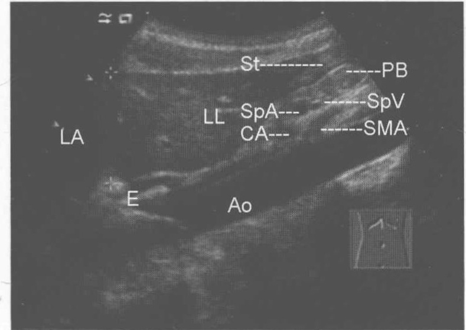
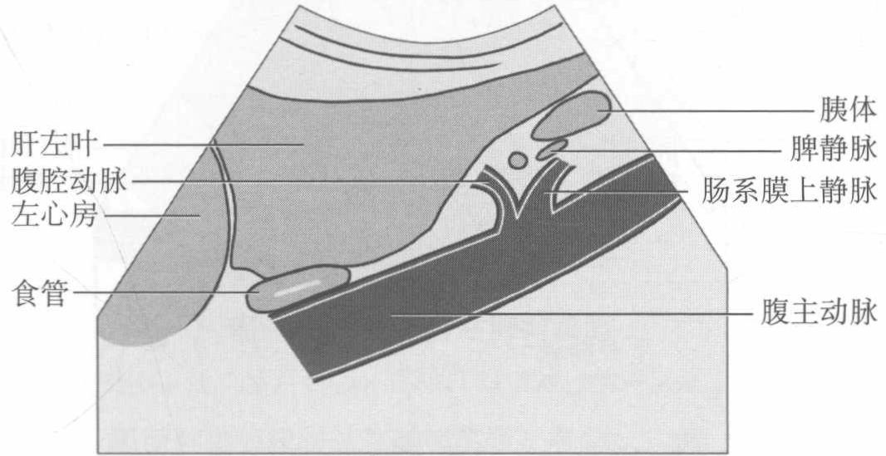
图8-1 剑突下经腹主动脉长轴肝左叶纵切面图
【探查方法】空腹8～12h，平卧位，探头竖置于剑突下中线偏左。
【断面结构】显示肝左叶纵切面，特别是膈顶部。腹主动脉长轴切面。食管下段斜切面。
【测量方法及正常值】在肝左叶膈顶部测左叶前后径，膈顶部至下缘测上下径。前后径一般应＜7cm。
【临床价值】此断面为肝左叶纵切的标准断面。在此切面测肝左叶的前后径及上下径。观察肝左叶的大小及形态。
【附注】一般情况下，受检者为消瘦体型者，前后径小，上下径大，下缘较锐。肥胖体型者前后径大，上下径小，下缘较钝。
（二） 剑突下经下腔静脉长轴肝脏纵切面（图8-2）
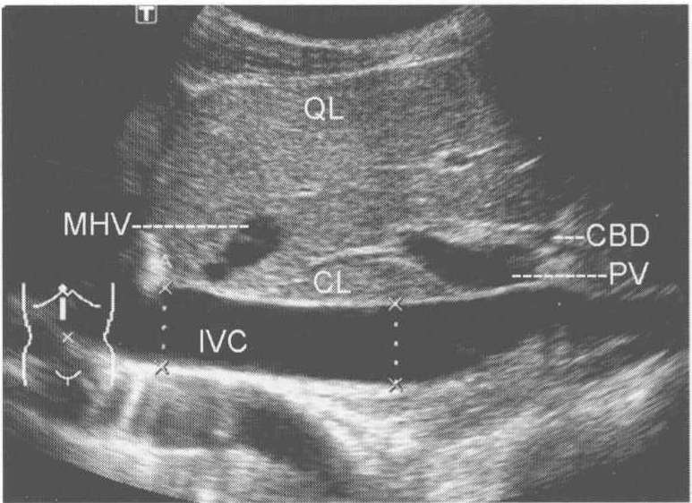
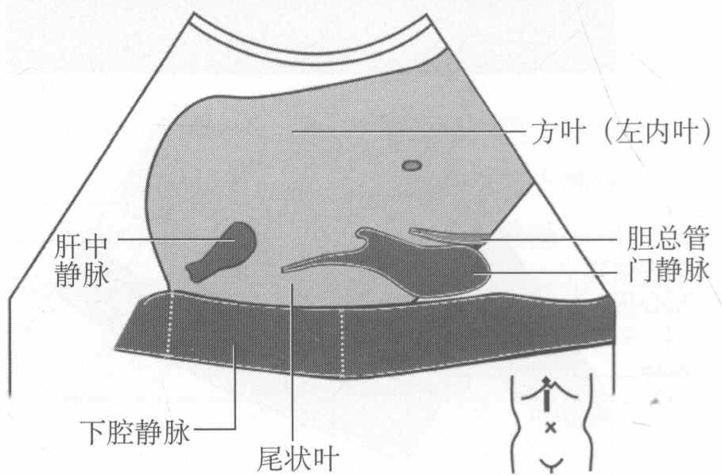
图8-2 剑突下经下腔静脉长轴肝脏纵断面图
【探查方法】平卧位，探头竖置于剑突下中线指向右斜。
【断面结构】下腔静脉（肝后段）长轴断面、方叶及尾状叶纵断面。膈顶及第二肝门附近的肝组织。
【测量方法及正常值】 测量下腔静脉右心房入口处及肝后段内径。正常值：膈肌以下肝后的部分称为肝段，其所在的位置称下腔静脉窝。前后径1.0～1.3cm。
【临床价值】下腔静脉占位性病变、扩张、狭窄、血栓等，如 Budd-Chiari 综合征。右心衰竭下腔静脉也可以扩张。
【附注】下腔静脉内径随呼吸而变化，吸气时内径增宽，呼气时内径变窄，在吸气时测量内径。
（三） 剑突下左右肝斜切面（图8-3）
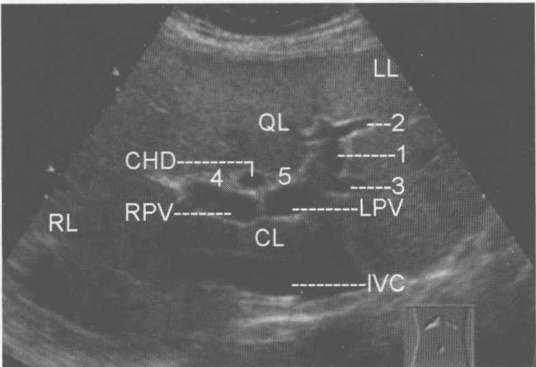
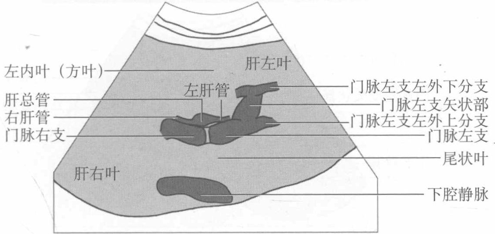
图8-3 剑突下左右肝斜切面
注：1. 门脉左支矢状部；2. 门脉左支左外下分支；3. 门脉左支左外上分支；4. 右肝管；5. 左肝管
【探查方法】平卧位，探头于剑突下中线偏右，声束指向右后方，与右肋缘平行斜置。
【断面结构】 显示门脉右支及右肝管、门脉左支横部、矢状部、左肝管、右肝前叶、左内叶及尾状叶。门脉左支横部的前方为方叶，后方为尾状叶。右肝后方为右肾横断面。
【测量方法及正常值】门脉右支及右肝管、门脉左支横部及左肝管。门静脉左右分支内径正常应小于1cm。目前对左右肝管内径的正常值有分歧，内径不超过0.3～0.4cm，绝大部分人群为小于0.3cm。但一定排除胆道阻塞性病变。胆道炎症也可以造成内径增宽。
【临床价值】观察左右肝实质回声、门静脉左右分支是否扩张，如肝硬化门静脉高压时。门静脉管腔无回声区是否清晰，如门静脉内栓子或瘤栓形成。左右肝管是否增宽、管壁是否增厚、是否有结石等。
（四） 剑突下肝左叶经门脉左支分支横切面（图8-4）
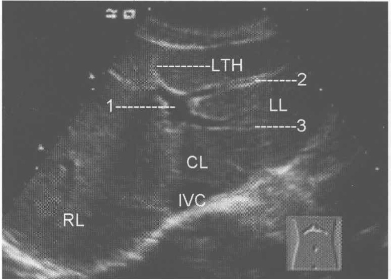
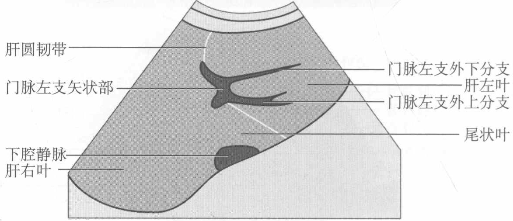
图8-4 剑突下肝左叶经门脉左支分支横切面
注：1. 门脉左支矢状部；2. 门脉左支外下分支；3. 门脉左支外上分支
【探查方法】 空腹 8～12h，平卧位，探头横置于剑突下向左上倾斜，声束指向上方。
【断面结构】左内叶、左外叶斜断面，门脉左支矢状部及其外上、外下分支，伴行的肝内胆管，后者走行于门脉分支的内侧。
【测量方法及正常值】测量门脉左支矢状部内径，一般应＜1.0cm。但矢状部内径可以有先天性的变异，可以较宽，在排除病人有门脉高压的情况下，可以随诊观察。可以测量尾状叶的前后径，一般应＜3cm。
【临床价值】①对左叶病变位置的定位。矢状部将左叶分为左内叶及左外叶，肝左静脉分支横断面和门脉左支矢状部中点的连线将左外叶分为左外叶上段及下段。②显示门脉左支矢状部有无管腔扩张或狭窄，有无栓子形成。③是否有左肝内胆管扩张。④下腔静脉阻塞综合征、严重的肝硬化致肝形态改变均可引起尾状叶增大。
（五） 剑突下肝左叶经尾状叶及左内叶纵切面（图8-5）
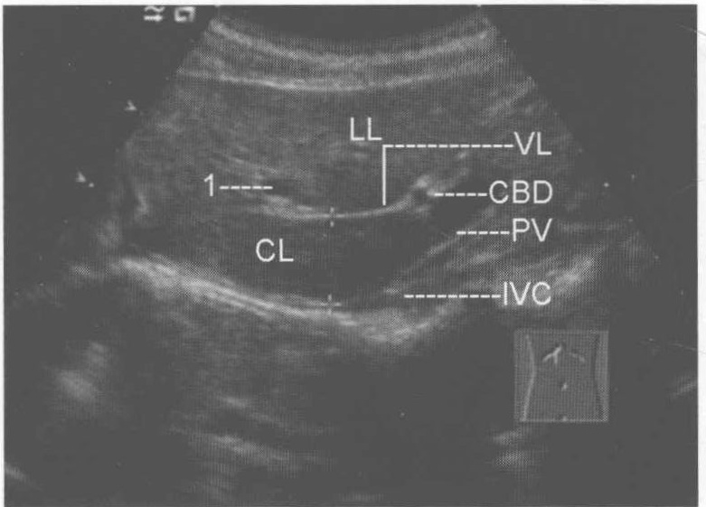
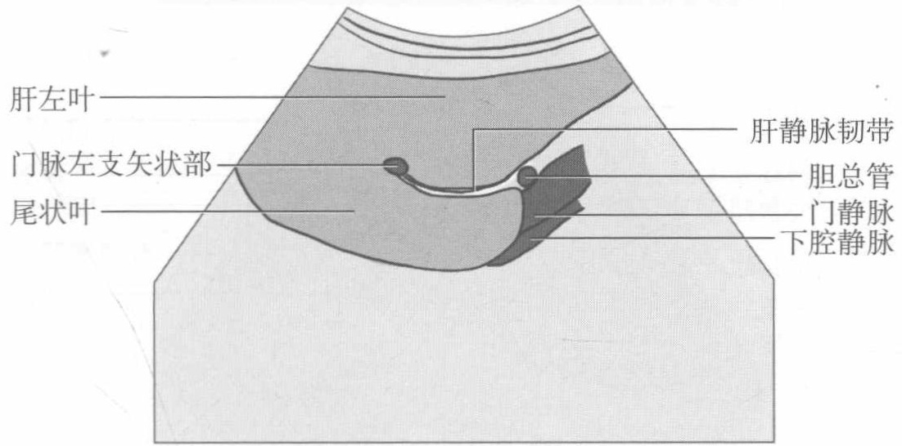
图8-5 剑突下肝左叶经尾状叶及左内叶纵切面
注：1. 门脉左支矢状部
【探查方法】 空腹 8～12h，平卧位，探头竖置于剑突下中线偏左。
【断面结构】尾状叶及左内叶纵断面。
【测量方法及正常值】可以测量尾状叶的上下径及前后径。尾状叶的前后径一般应＜3cm。上下径个体间可以有一定的变异。
【临床价值】显示尾状叶及左内叶弥漫性及占位性病变。引起尾状叶肿大常见疾病如布-加氏综合征、严重的肝硬化致肝形态改变等。有人将尾状叶肿大作为诊断肝硬化的指标之一，本人认为，当肝硬化出现尾状叶肿大，病情已经很严重，所以不能作为早期诊断指标。
【附注】 尾状叶的大小及形态有一定的变异，由于前方的肝静脉韧带回声较强，可使后方回声衰减，尾状叶回声很低，不要误以为是占位性病变。
（六） 剑突下肝左外叶斜断面（图8-6）
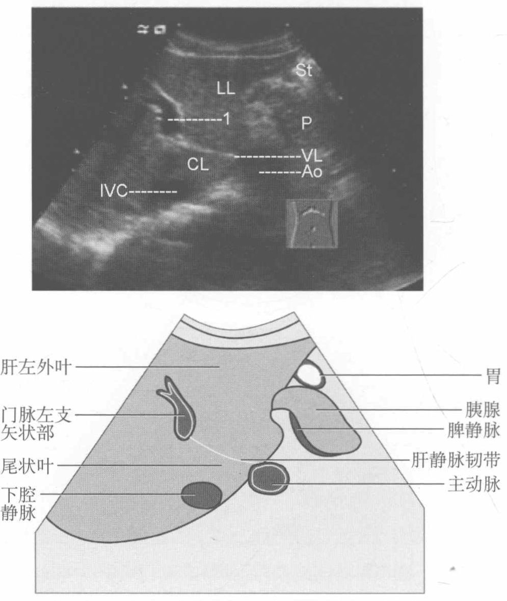
图8-6 剑突下肝左外叶斜断面
注：1. 门脉左支矢状部
【探查方法】 空腹 8～12h，平卧位，探头横置于剑突下中线向左上倾斜。
【断面结构】 肝左外叶斜断面。特别显示左外叶外缘。
【临床价值】 ①重点观察左外叶边缘部，避免突出于左外缘部的占位性病变，如肝囊肿、肝实性占位性病变的漏诊；②鉴别占位病变位于肝左外叶还是左上腹。
（七） 剑突下肝左叶及尾状叶斜断面（图8-7）
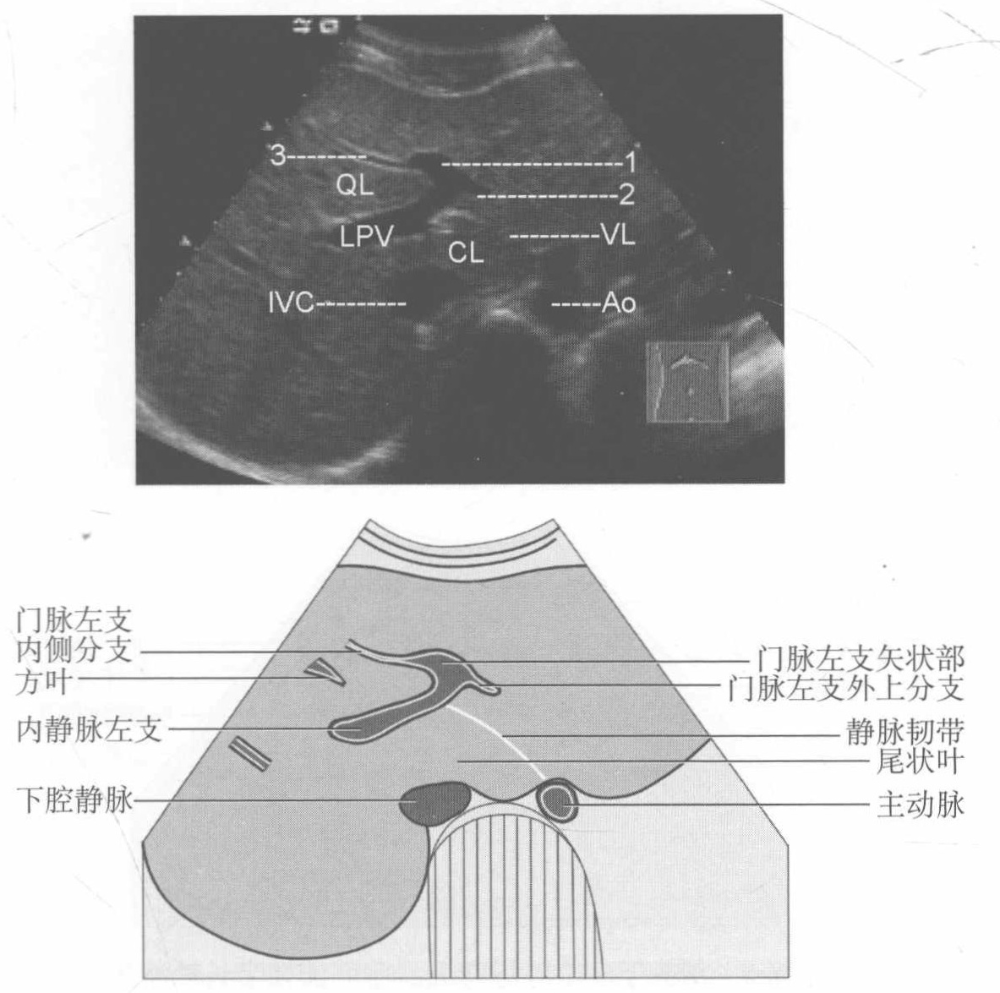
图8-7 剑突下肝左叶及尾状叶斜断面
注：1. 门脉左支矢状部；2. 门脉左支外上分支；3. 门脉左支内侧分支
【探查方法】 空腹 8～12h，平卧位，探头横置于剑突下中线处，声束指向后上方。
【断面结构】尾状叶及左内叶斜断面，门脉左支横部，下腔静脉斜断面。
【临床价值】①观察尾状叶、左内叶及左外叶有无弥漫性或占位性病变；②显示尾状叶的大小，增大最常见于布-加氏综合征及部分严重的肝硬化病人。
【附注】 尾状叶位于门脉左支横部的后方，由于血管壁后方的回声衰减，会造成尾状叶回声较低，注意和低回声占位性病变鉴别。
（八）剑突下肝左叶纵切面显示肝圆韧带长轴切面（图8-8）
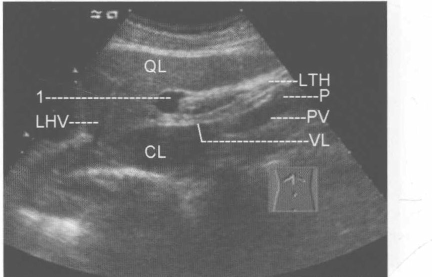
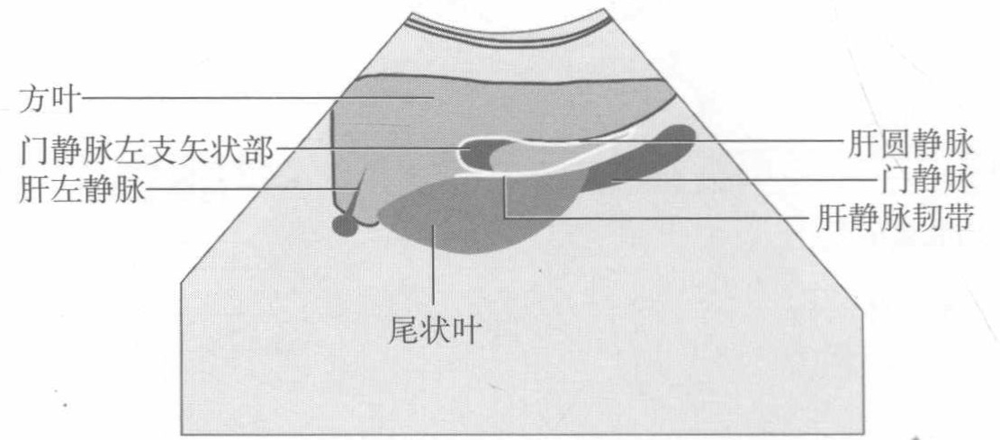
图8-8 剑突下肝左叶纵切面显示肝圆韧带长轴断面
注：1. 门脉左支矢状部
【探查方法】空腹8～12h，平卧位，探头竖置于剑突下。
【断面结构】显示肝圆韧带长轴断面，由门脉左支矢状部（囊部）向前下走行至肝下缘表面。
【临床价值】门脉高压脐旁静脉重新开放时，在此切面可显示管状无回声区，始于门脉左支囊部，行于肝圆韧带内，走行至肝下缘，经前腹壁至脐部。肝圆韧带位于左纵沟的前部，是左内叶和左外叶的分界线。
（九） 剑突下肝左叶斜切面显示肝圆韧带斜断面（图8-9）
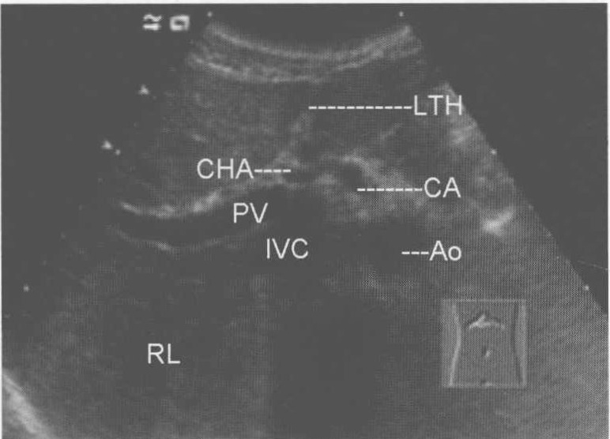
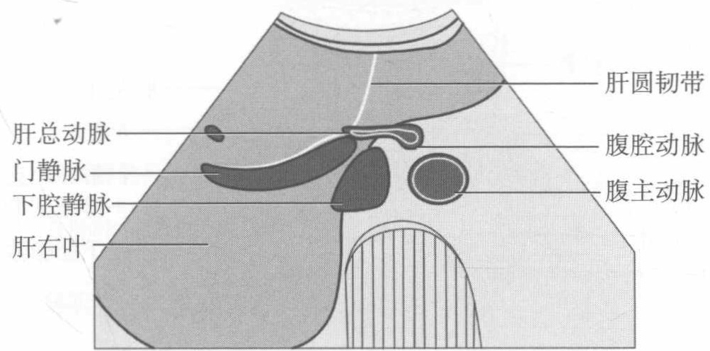
图8-9 剑突下肝左叶斜切面显示肝圆韧带斜断面
【探查方法】 空腹 8～12h，平卧位，探头横置于剑突下，声束向后上方扫查。
【断面结构】肝圆韧带斜切面，呈三角形强回声。肝左内叶及左外叶斜断面。
【临床价值】 ①门脉高压脐旁静脉开放时，可在此切面肝圆韧带处显示脐旁静脉横断面为椭圆形无回声区。CDFI 可以显示血流信号。②肝圆韧带斜断面及横断面回声较强，注意和肝内钙化灶及强回声型血管瘤鉴别。
（十） 右肋缘下经下腔静脉和胆囊肝脏斜断面（图8-10）
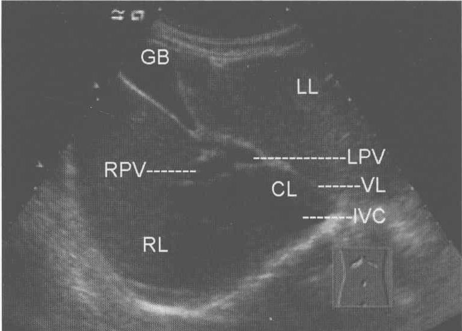
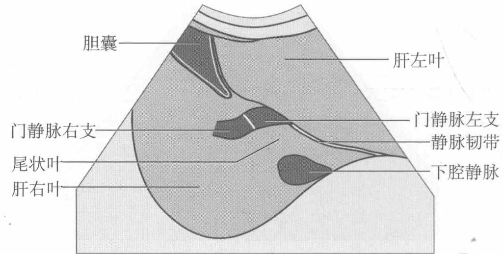
图8-10 右肋缘下经下腔静脉和胆囊肝脏斜断面
【探查方法】空腹8～12h。平卧位，探头斜置与右肋下缘平行于剑突下中线右侧，声束指向右后上方。
【断面结构】 肝右叶、左内叶及尾状叶斜断面。下腔静脉和胆囊的斜切面。
【临床价值】此切面下腔静脉和胆囊的连线是肝脏的分叶标志，将肝分为右半肝和左半肝，门脉左支矢状部将左叶分为左外叶和左内叶。门脉左支横部和下腔静脉之间为尾状叶。
（十一） 剑突下肝脏斜切面显示第二肝门及肝静脉（图8-11）
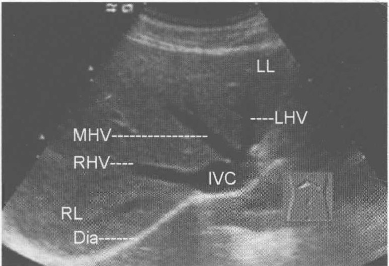
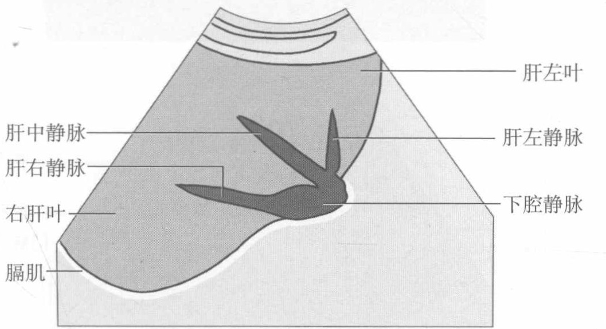
图8-11 剑突下肝脏斜切面显示第二肝门及肝静脉
【探查方法】 空腹 8～12h，平卧位，探头置于剑突下中线右侧，声束指向右后上方。
【断面结构】显示第二肝门下腔静脉横断面，三支肝静脉汇入下腔静脉的斜断面。
【测量方法及正常值】 测量三支肝静脉内径。最好在距汇入下腔静脉处1～2cm测量。标尺置于两侧管壁上。肝左静脉内径0.5～0.9cm，肝中静脉内径0.5～0.9cm，肝右静脉内径0.4～0.9cm。
【临床价值】 ①膈顶部下腔静脉、肝静脉、特别是肝静脉至下腔静脉入口处是否狭窄。②肝脏分叶的标志：肝左静脉是左内叶及左外叶的分界标志，肝中静脉是左半肝和右半肝的分界标志，肝右静脉是右前叶和右后叶的分界标志。③第二肝门附近肝组织内占位病变的定位。
【附注】 肝静脉汇入下腔静脉可以是单独汇入，也可以是两支共干，常见肝左静脉和肝中静脉共干。
（十二） 第一肝门高位斜切面（图8-12）
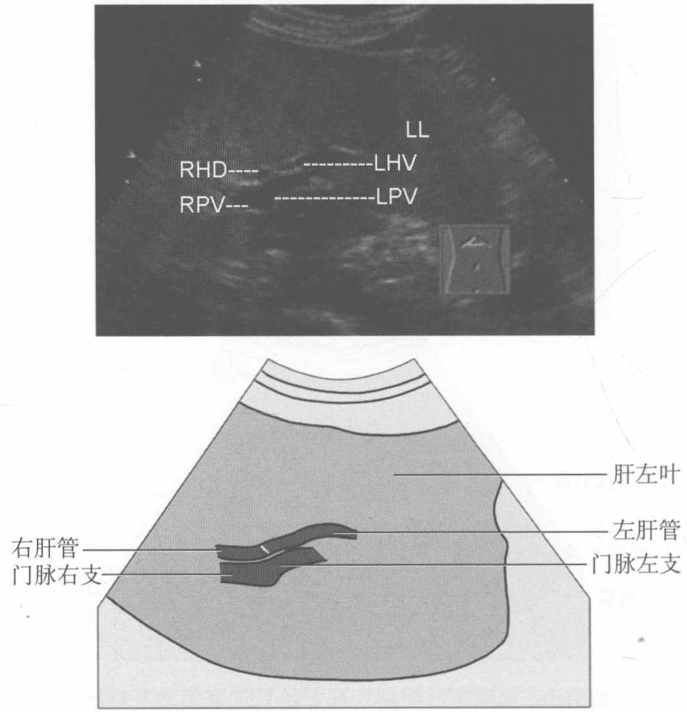
图8-12 第一肝门高位斜切面
【探查方法】 空腹 8～12h，平卧位，探头横置于剑突下中线偏右，声束指向后上方。
【断面结构】显示第一肝门处门脉左右分支长轴断面及伴行的左右肝管纵断面。左肝、右肝、尾状叶及下腔静脉斜断面。
【测量方法及正常值】 测门脉左右分支内径、左右肝管内径。门脉左支内径范围 0.8 ∼ 1.3cm，一般应 < 1.0cm。门脉右支内径 0.6 ∼ 1.2cm，一般应 < 1.0cm。肝管内径应 < 0.3cm。
【临床价值】 观察第一肝门部结构及其位置关系。门脉左右分支及左右肝管管腔是否扩张或狭窄，腔内有无占位性病变。
（十三） 剑突下经肝左静脉长轴肝左叶横切面（图8-13）
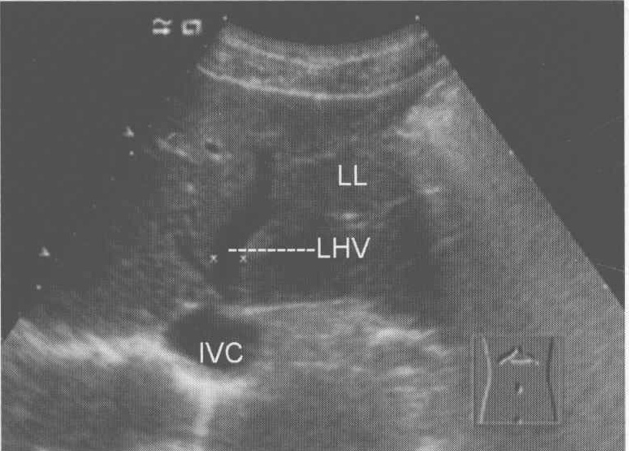
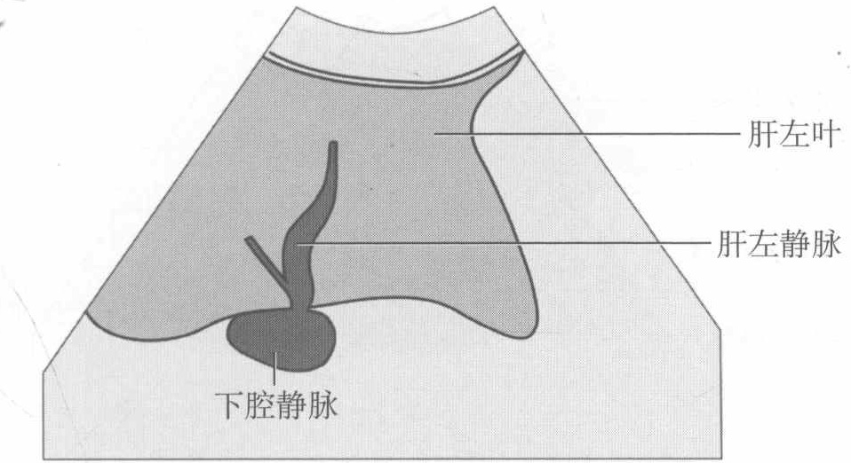
图8-13 剑突下经肝左静脉长轴肝左叶横切面
【探查方法】 空腹 8～12h，平卧位，探头横置于剑突下探头下方略向左上倾斜。
【断面结构】 显示肝左静脉长轴断面、肝左静脉汇入下腔静脉入口处及下腔静脉斜断面，肝左内叶及左外叶。
【测量方法及正常值】 测量肝左静脉内径，一般应＜1.0cm。Doppler 超声测其血流速度的最佳断面。
【临床价值】①肝左静脉主干近端行走于左叶间裂中，是左内叶和左外叶的分界标志；其远侧部分及较粗属支位于左段间裂内，是左外叶的左外上段和左外下段的分界标志。②观察是否有肝左静脉狭窄、闭塞或血栓形成。
【附注】 肝左静脉走向因人而异。故探查方向不一定很固定。可以和肝中静脉共干汇入下腔静脉。
（十四） 右肋缘经第一肝门右肝斜切面（图8-14）
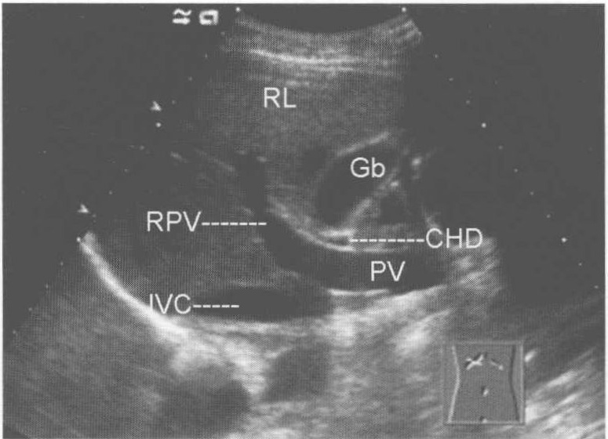
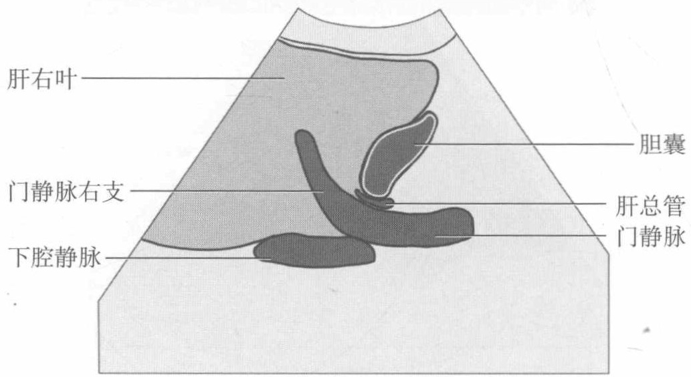
图8-14 右肋间经第一肝门右肝斜切面
【探查方法】空腹8～12小时，左侧卧位，探头置于右肋缘处。
【断面结构】第一肝门：门静脉主干及右支长轴切面，显示胆囊及下腔静脉的斜断面分别位于门静脉的两侧。胆总管斜切面。
【测量方法及正常值】测门静脉主干及右支内径。主干必须在肝外测量。正常值＜1.3cm。脉冲 Doppler 超声测门静脉主干及右支血流速度。正常值15～20cm/s。
【临床价值】①观察及测量门脉主干及右支；②观察肝门部周围肝组织。
（十五）剑突下经肝中静脉长轴右肝纵切面（图 8-15）
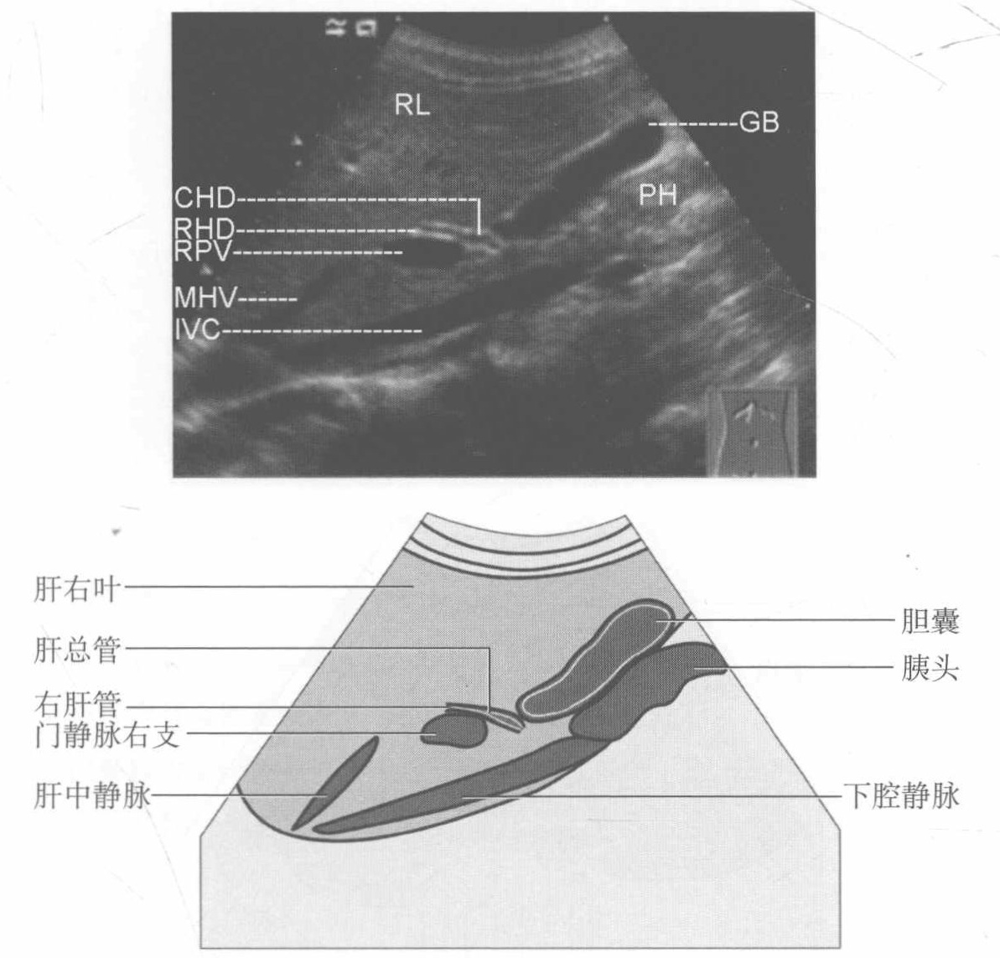
图8-15 剑突下经肝中静脉长轴右肝纵切面
【探查方法】空腹8～12h，平卧位，探头斜置于剑突下，探头上方和中线之间的夹角 15° ∼ 20°。
【断面结构】肝中静脉长轴断面、肝中静脉至下腔静脉入口处及膈顶、第二肝门附近肝组织。
【测量方法及正常值】可以测量肝中静脉内径。应该在距下腔静脉入口1cm处测量。正常值<1cm。
【临床价值】此断面同时显示肝中静脉和胆囊，为肝脏中线断面，是左右肝的分界处。①诊断肝中静脉病变；②观察占位性病变在肝内的位置及和肝中静脉的关系。
（十六） 右肋间经第一肝门右肝斜切面（图8-16）
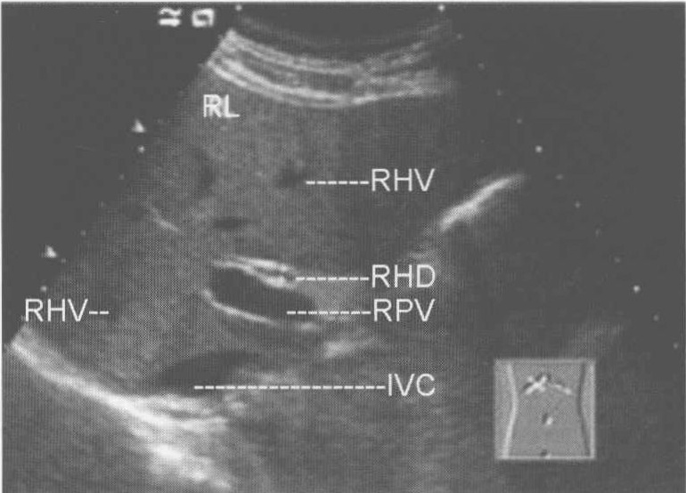
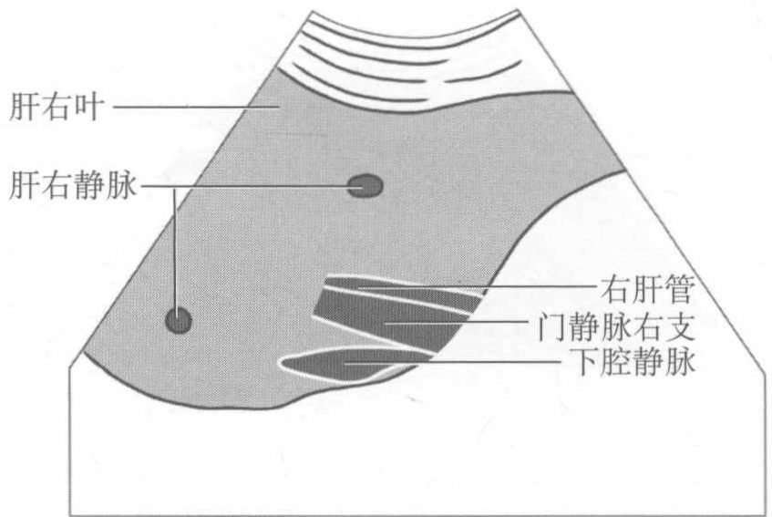
图8-16 右肋间经第一肝门右肝斜切面
【探查方法】空腹8～12h，左侧卧位，探头置于右侧锁骨中线第7、8肋间。
【断面结构】第一肝门：门静脉主干及右支长轴切面，显示胆囊及下腔静脉的斜断面分别位于门静脉的两侧。肝动脉、右肝动脉及胆总管斜切面。右肝管及右肝管。
【测量方法及正常值】 测门静脉右支内径。正常范围 0.6 ∼ 1.2cm，一般应小于 1.2cm。脉冲 Doppler 超声测门静脉右支血流速度。正常值 15 ∼ 20cm/s。
【临床价值】①观察及测量门脉右支及右肝管；②观察肝门部周围肝组织。
（十七） 右肋间右肝前叶及左内叶斜切面（图 8-17）
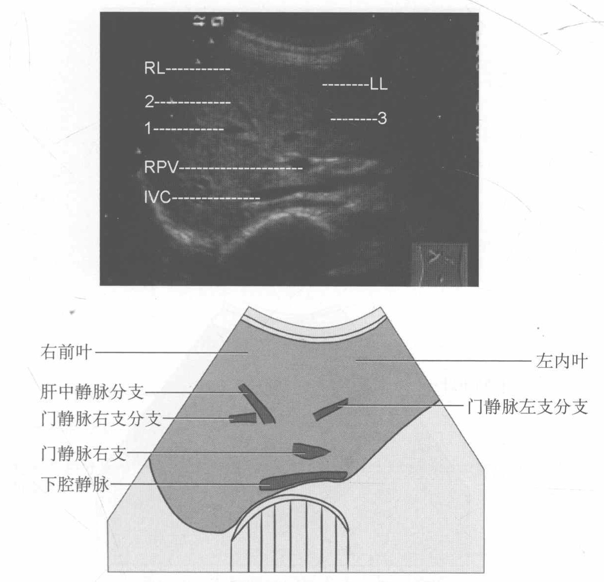
图8-17 右肋间右肝前叶及左内叶斜切面
注：1. 门静脉右支分支；2. 肝中静脉分支；3. 门静脉左支分支
【探查方法】 空腹 8～12h，平卧位，探头置于右锁骨中线内侧第5、6肋间，探头需向左后方扫查左内叶，向右后方向扫查右前叶。
【断面结构】右肝前叶及左内叶斜切面，门脉右支斜断面。下腔静脉、肝中静脉分支及肝左静脉分支斜断面。
【临床价值】高位扫查右前叶及左内叶，特别是位于右前叶包膜下的病变。此切面是左肝和右肝的交界切面，是剑突下切面和右肋间切面的衔接切面，由于肋骨的遮挡，不易显示，为易漏诊区域之一，是肝脏扫查必须观察的切面之一。
（十八） 右肋间经右肝膈顶部右肝斜切面（图8-18）
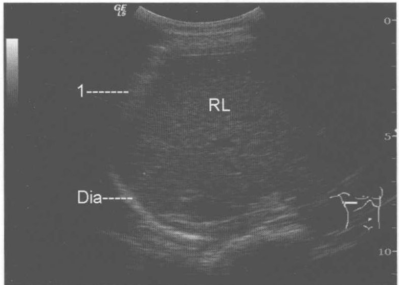
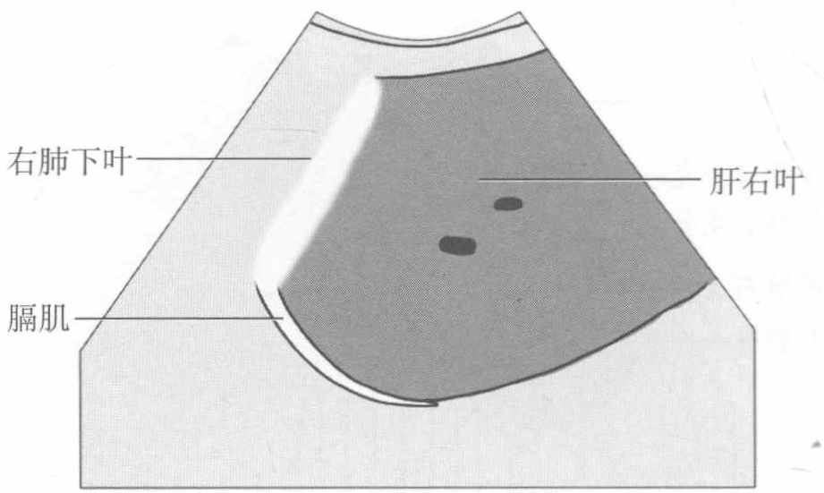
图8-18 右肋间经右肝膈顶部右肝斜切面
注：1. 右肺下叶
【探查方法】 空腹 8～12h，平卧位，探头置于右腋前线第6、7肋间，向右上扫查。
【断面结构】右叶膈顶部、右侧膈肌及右膈下间隙，右肺下叶。
【临床价值】 ①此切面可以扫查右肝膈顶部区域肝组织。②对于右肝包膜下病变、右膈下间隙积液及右膈上右侧胸腔积液均可显示。此切面为边缘切面之一，需专门扫查，为膈顶部肝脏扫查易漏诊区域之一。
（十九）右肋间经门脉右支右肝斜断面（图 8-19）
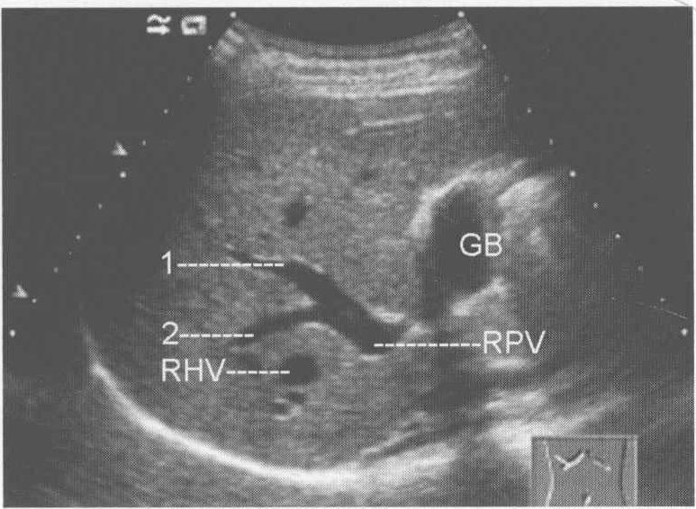
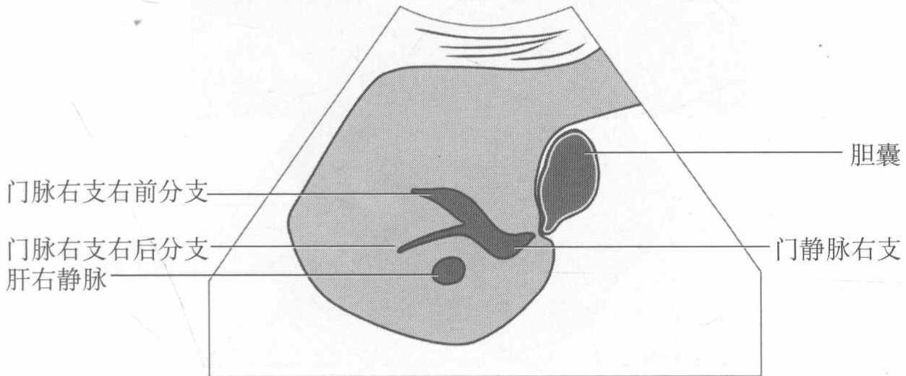
图8-19 右肋间经门脉右支右肝斜断面
注：1. 门脉右支右前分支；2. 门脉右支右后分支
【探查方法】空腹8～12h，平卧位或左侧卧位，探头置于右季肋区第7、8肋间。
【断面结构】门脉右支及其右前、右后分支长轴断面，右肝前叶和后叶斜断面。右肝静脉及中肝静脉斜断面。如肝内胆管扩张可显示和门静脉右支分支伴行的右肝内胆管。
【测量方法及正常值】门脉右支内径 0.6∼1.2cm，一般应 <1.0cm。右肝内胆管内径应 <0.3cm。
【临床价值】 ①观察门脉右支、右肝前后叶、门脉右支分支以及和其伴行的右肝内胆管。②门脉右支将肝右叶分为右前叶及右后叶，右后支又将右后叶分为右后叶上段及右后叶下段。
（二十） 右肋缘下右肝及右肾纵切面（图8-20）
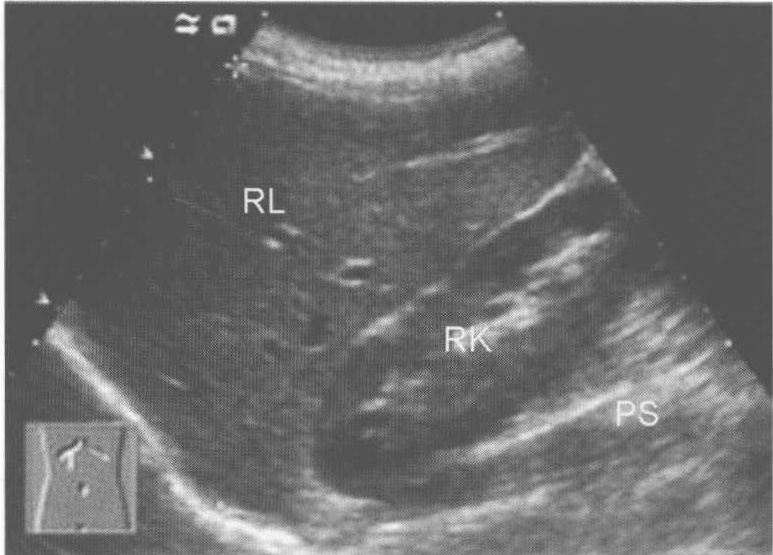
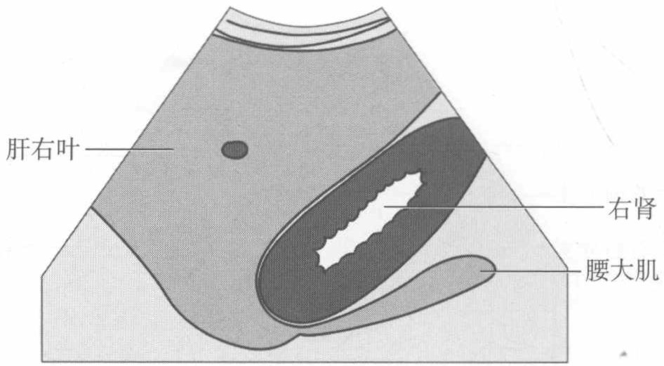
图8-20 右肋缘下右肝及右肾纵切面
【探查方法】 空腹8～12h。平卧位，探头竖置于右肋缘下锁骨中线外侧约1cm处，探头须和水平线垂直。嘱受检者深吸气使肝脏下移。显示出右肝最大前后径同时显示右肾纵断面为标准切面。
【断面结构】 肝右叶纵切面，右肾纵切面。右后叶下方和肾上极之间为肝肾隐窝。
【测量方法及正常值】 在右叶最厚处测量右肝的前后径。目前的资料显示正常值为12～14cm。＞14cm为异常。
【临床价值】 ①测量右肝的前后径。②仰卧时右肝肾隐窝是小骨盆以上的腹腔最低点，腹腔内的液体易积聚于此。③正常情况下，右肝的脏面和右肾上腺紧贴。右上腹膜后大的占位病变可造成肝肾分离。鉴别占位性病变来自肝、肾还是腹膜后可以让病人深呼吸，肝脏会随着呼吸而移动，位于肾脏和腹膜
后病变则不移动。
【附注】 肝右叶大小的衡量，作者认为前后径非常重要，可以真实的反映右肝的大小，测量的误差较小，弥补肝最大斜径的误差。
（二十一） 右肋缘下经肝右静脉长轴右肝斜切面（图8-21）
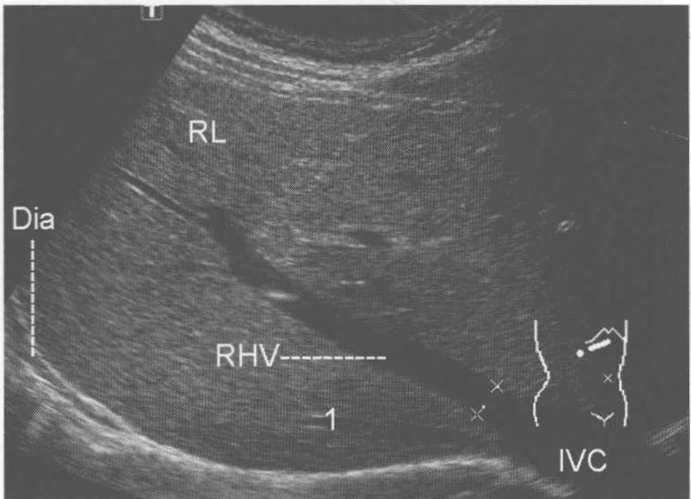
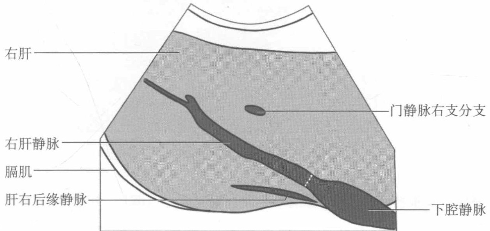
图8-21 右肋缘下经肝右静脉长轴右肝斜切面
1. 肝右后缘静脉
【扫查方法】 空腹 8～12h，平卧位或左侧卧位，探头横置于右肋缘下，和右肋弓平行，向右后上扫查显示出右肝静脉长轴断面。
【断面结构】右肝静脉纵切面，右肝前叶和后叶。肝右静脉将右肝分为右前叶和右后叶。此切面图的近侧为肝的前下部，远侧为肝的后上部。
【测量方法及正常值】在此切面测量肝右静脉内径。正常值 0.8 ~ 1.0cm。测量肝右叶最大斜径，是指在此切面的肝后下包膜到前上包膜间的距离。正常值应小于 14cm。
【临床价值】此切面为测量右肝大小的最常用切面。可以观察右肝膈顶部；观察右膈肌和肝脏面之间即右肝上隐窝。膈下积脓或大量腹水在此部位可显示无回声区；可以观察肝右静脉至下腔静脉入口。
【附注】以往大多作者主张在此切面测量肝右叶最大斜径，即此切面前下到后上间的距离，本人认为此切面会受肝下缘位置、肝大小（厚度）及肝右静脉走行方向等因素的影响，不一定能反映肝右叶的实际大小。测量肝右叶的前后径更准确。
（二十二） 右肋缘下经第一肝门纵切面1（图8-22）
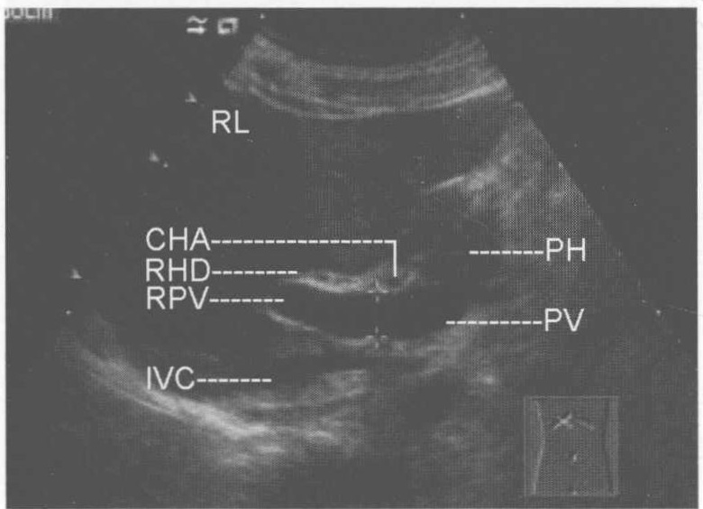
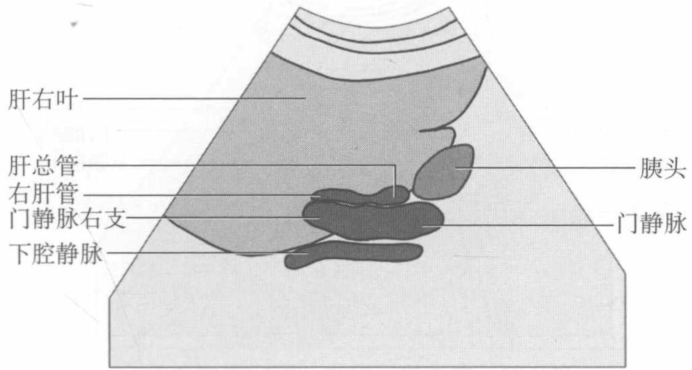
图8-22 右肋缘下经第一肝门纵切面1
【探查方法】 空腹 8～12h，平卧位探头置于右肋缘下，和右肋弓垂直。嘱受检者吸气使肝脏下移。
【断面结构】门静脉主干及右支长轴切面，右肝、胆总管、胆囊及下腔静脉斜切面。
【测量方法及正常值】 测门静脉内径，需在肝门外门静脉分叉前测量。脉冲多普勒显示门静脉血流频谱，测血流速度。
【临床价值】①观察门静脉及胆总管是否扩张或狭窄，有无异常回声，管腔内无回声区是否清晰；②肝门部是否有肿大的淋巴结。
（二十三） 右肋缘下经第一肝门纵切面2（图8-23）
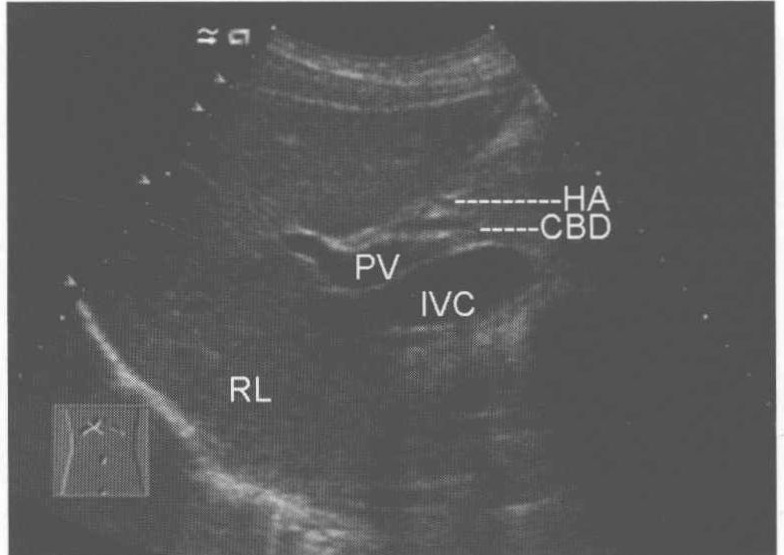
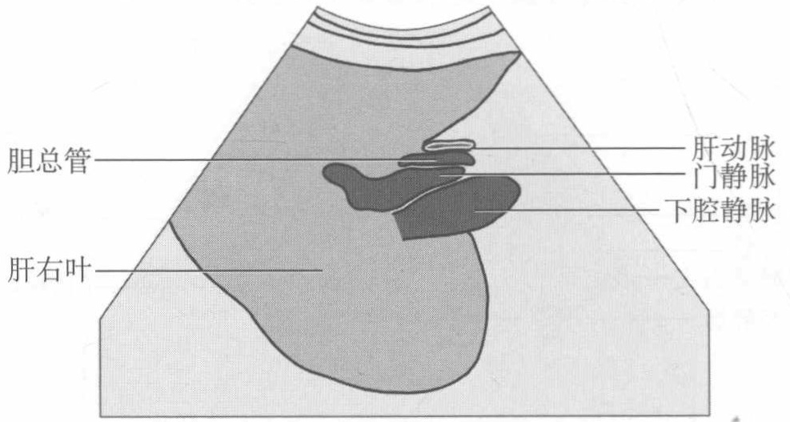
图8-23 右肋缘下经第一肝门纵切面2
【探查方法】 空腹 8～12h，平卧位，探头置于右肋缘下，在上述第一肝门纵切面1的基础上探头略下移，顺时针旋转 20°～ 30°。受检者吸气使肝脏下移。
【断面结构】 第一肝门处韧带内的三支管道结构及其相互的位置关系。显示胆总管长轴断面。从前向后依次为肝动脉、胆总管、门静脉。后方为下腔静脉斜切面。
【测量方法及正常值】测胆总管及肝动脉内径。为内膜到内膜的距离。正常胆总管内径 0.4 ∼ 0.6 cm，60岁以上的老年人内径可以大于 0.6 cm。大于 0.8 cm为异常。要找原因，定期随访，正常肝总动脉内径 0.39 ± 0.07 cm，肝固有动脉内径： 0.33 ± 0.07 cm。
【临床价值】①观察门静脉、胆总管及肝动脉三者的关系。管腔是否扩张或狭窄，有无异常回声，管腔内无回声区是否清晰。②肝门部是否有肿大的淋巴结。③肝动脉扩张见于严重的肝硬化、门静脉阻塞性疾病、肝移植后动脉瘤形成。
（二十四） 右肋缘下经第一肝门横断面（图8-24）
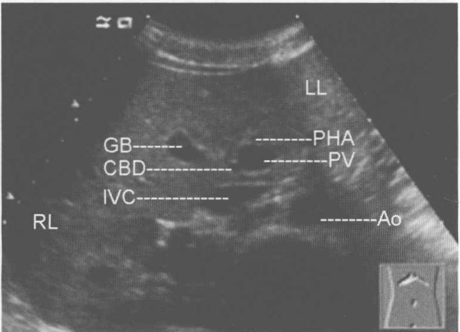
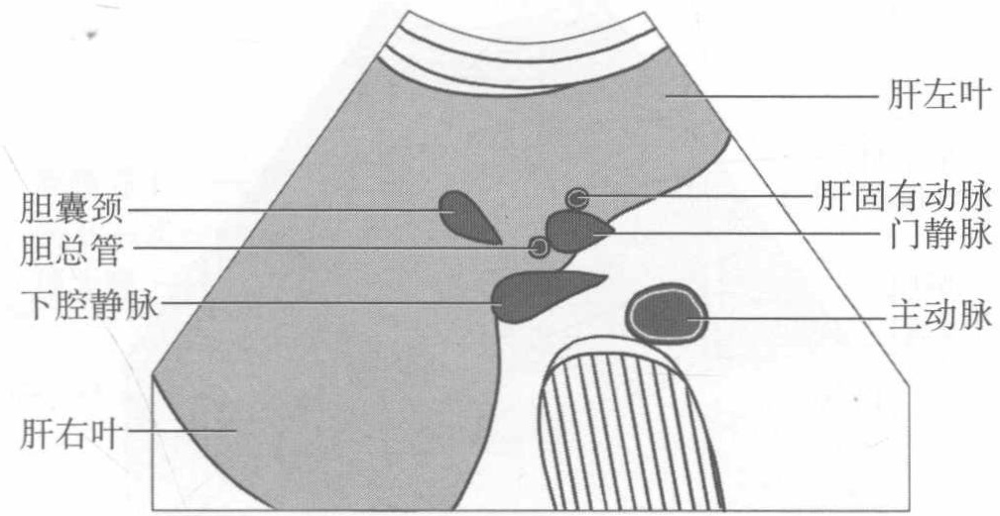
图8-24 右肋缘下经第一肝门横断面
【探查方法】 空腹 8～12h。平卧位，探头置于右肋缘下，和右肋弓平行。嘱受检者吸气使肝脏下移。
【断面结构】第一肝门横断面，显示门静脉、肝动脉及胆总管横断面。腹主动脉、下腔静脉横断面，胆囊颈斜断面。
【临床价值】①显示第一肝门处门静脉、肝动脉和胆总管三者的毗邻关系；②显示第一肝门和周围脏器的关系。诊断肝门部占位性病变。
（二十五） 右肋缘下肝右后叶及右肾横切面（图8-25）
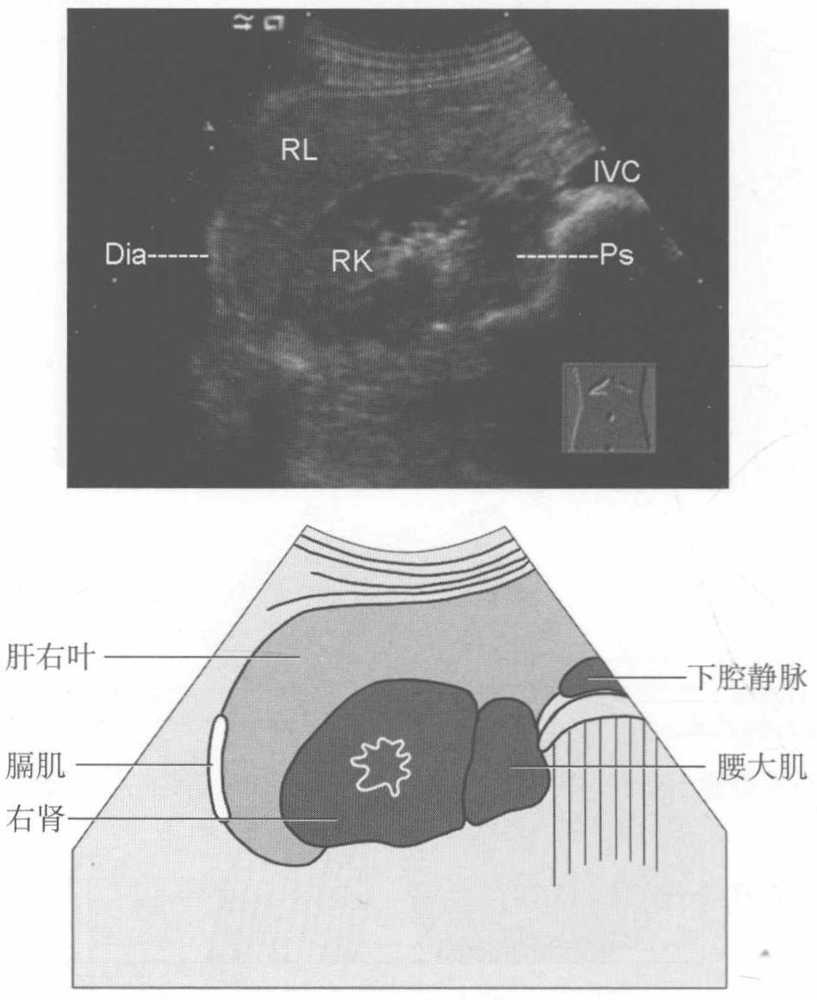
图8-25 右肋缘下肝右后叶及右肾横切面
【探查方法】空腹8～12h，平卧位，探头横置于右肋缘下。受检者吸气使肝脏下移，探头从上向下扫查。
【断面结构】右肝后叶横切面，右肾上腺横切面，右肋膈角。
【临床价值】①显示肝右后叶特别是下缘角处病变；②右肋膈角积液；③显示右后叶和右肾的关系；④右肝肾间隙。
（二十六） 右肋缘下经右肝膈顶部右肝斜切面（图8-26）
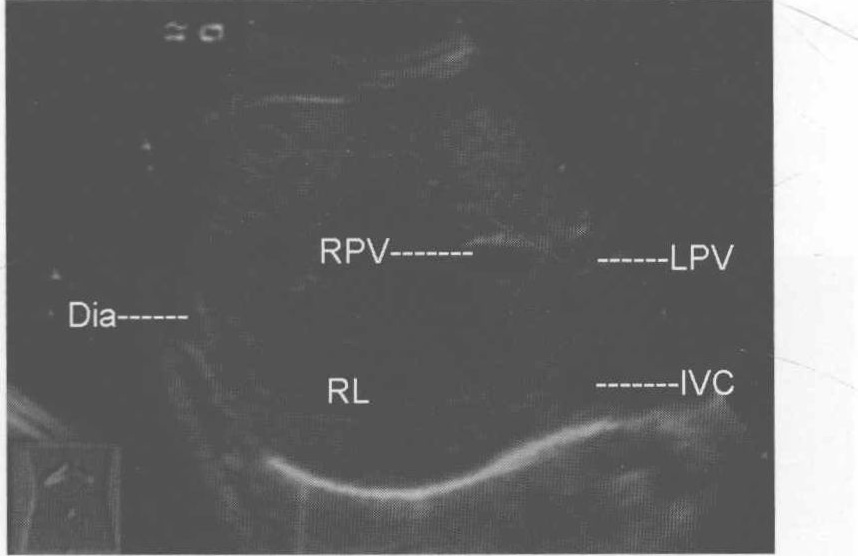
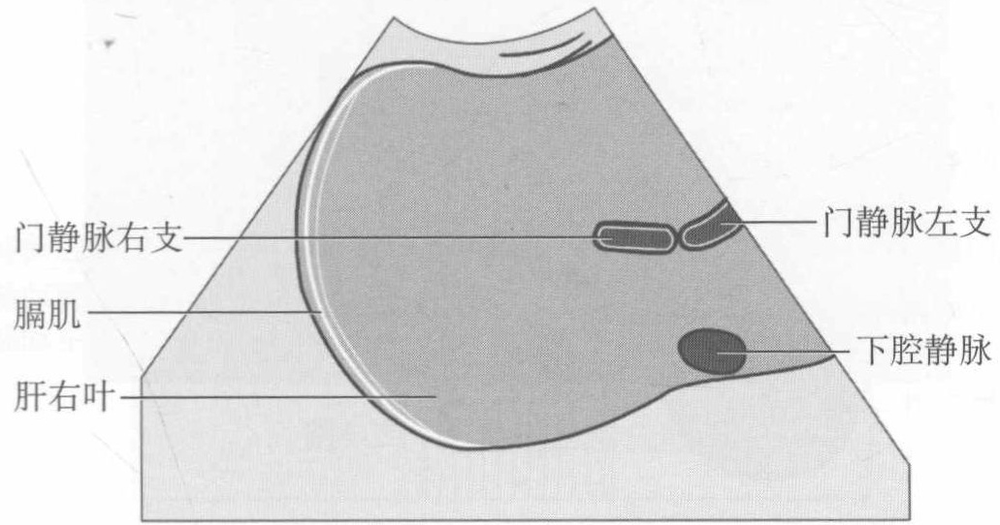
图8-26 右肋缘下经右肝膈顶部右肝斜切面
【探查方法】 空腹 8～12h，平卧位，探头置于右肋缘下，和右肋弓平行。受检者吸气使肝脏下移，探头从前下向后上扫查。
【断面结构】右肝斜切面，显示右肝前后叶、右肝膈顶部。
【临床价值】此切面探头可以做上下前后较大范围的扇形扫查。①最大范围的显示右肝；②显示右肝膈顶部、右膈下间隙、肝包膜下病变；③由于可以显示右侧肋膈角，可以在此切面发现右侧肋膈角积液。
（二十七） 剑突下肝总动脉及脾动脉长轴断面（图8-27）
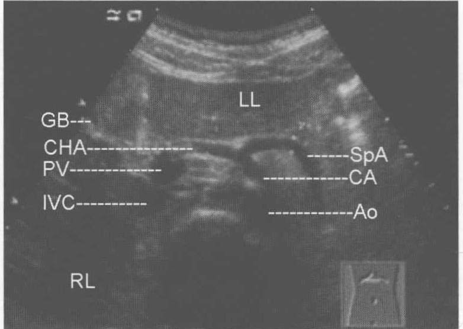
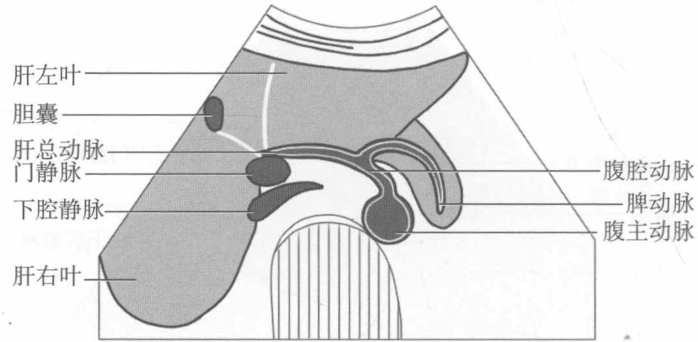
图8-27 剑突下肝总动脉及脾动脉长轴断面
【探查方法】 空腹 8～12h，平卧位，探头横置于剑突下。在显示胰腺横断面后探头略向上扫查于胰腺上缘声束指向后上方，显示肝动脉及脾动脉长轴断面。【断面结构】 肝总动脉及脾动脉长轴断面，胰腺上缘横断面。腹主动脉及下腔静脉的横断面。
【测量方法及正常值】 测肝总动脉及脾动脉内径及血流速度。正常值：肝总动脉内径 0.39 ± 0.07 cm。肝固有动脉内径 0.33 ± 0.07 cm。
【临床价值】 ①在肝移植病人，用此断面观察肝动脉管腔是否通畅，有无吻合口狭窄或血栓形成。②严重的门脉高压、门静脉阻塞性疾病如门静脉血栓、癌栓形成或闭塞，肝动脉均呈代偿性增粗，血流速度明显加快。③在脾大的病人，脾动脉血流速度明显地加快。④在此断面，可以显示上腹部腹膜后有无淋巴结肿大。这些淋巴结一般位于腹腔动脉、肝动脉或脾动脉的周围。
【附注】 肝动脉有75%~77%为正常从腹腔动脉发出，但有23%~25%为异位起源，称为迷走肝动脉。最常见的为起源于肠系膜上动脉，为10.7%~11.1%，其次为起源于胃左动脉。如果肝脏没有其他动脉供应时，此种异位起始的肝动脉便称为代替动脉。
（二十八） 肝总动脉血流频谱（图8-28）
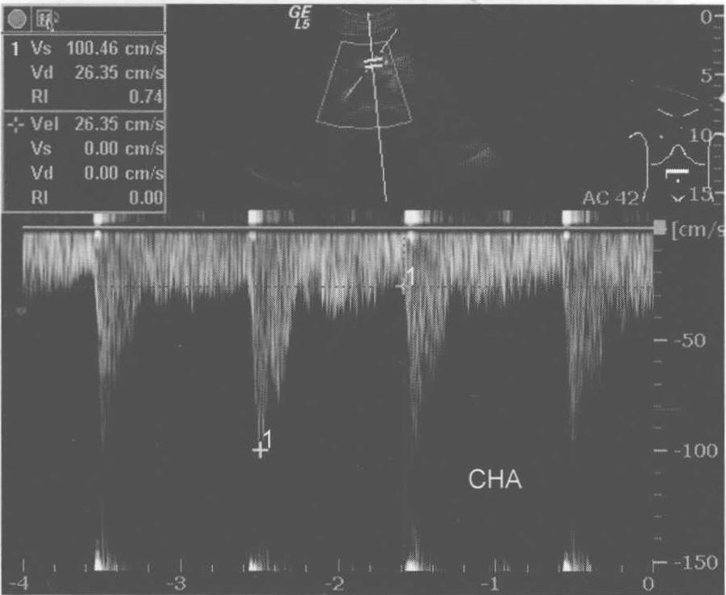
图8-28 肝总动脉血流频谱
【探查方法】 空腹 8～12h，平卧位，于剑突下肝总动脉长轴断面处取血流频谱，声束和血流束间的夹角小于 60°。
【测量方法及正常值】脉冲多普勒显示血流频谱，测血流速度及阻力指数。正常值： 91.1 ± 24.9cm/s。
【断面结构】 正常情况下，肝动脉为向上三峰，阻力指数较低。
【临床价值】①在肝移植病人，用此断面观察肝动脉管腔是否通畅，有无吻合口狭窄或血栓形成。如果彩超显示血流束明显中断或未显示，肝动脉闭塞则测不到血流信号，提示血管狭窄或闭塞。②在原发性肝癌、门静脉阻塞性疾病如门静脉血栓或癌栓形成，肝动脉均呈代偿性增粗，血流速度明显加快。③在脾大的病人，脾动脉血流速度明显地加快。
（二十九） 剑突下肝固有动脉长轴断面（图8-29）
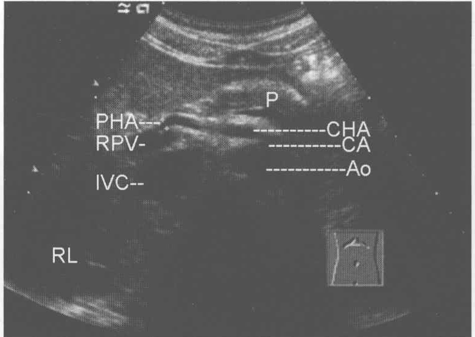
图8-29 剑突下肝固有动脉长轴断面
【探查方法】 空腹8～12h，探头置于剑突下，在显示肝总动脉长轴断面后，向上追踪，在胰头的外侧，肝总动脉分出胃十二指肠动脉后，移行为肝固有动脉。【断面结构】 第一肝门部，肝固有动脉长轴断面。肝固有动脉自肝总动脉分出，经肝十二指肠韧带上行到第一肝门附近，在此分成肝左右动脉。
【测量方法及正常值】 测肝固有动脉内径。正常值： 0.33 ± 0.07cm。脉冲多普勒在此断面显示血流频谱，测血流速度。
【临床价值】①在肝移植病人，用此断面观察肝动脉管腔是否通畅，有无吻合口狭窄、动脉瘤或血栓形成；②在原发性肝癌、门静脉阻塞性疾病如门静脉血栓或癌栓，肝动脉均呈代偿性增粗，血流速度明显加快；③可以显示肝门部有无淋巴结肿大。
【附注】 若在常见类型的肝左右动脉以外，还有另一支异位起始的动脉便称为副肝动脉。
（三十） 肝固有动脉血流频谱（图8-30）
图8-30 肝固有动脉血流频谱
【探查方法】 空腹 8～12h，平卧位，于第一肝门肝固有动脉处取血流频谱，声束和血流束间的夹角应小于 60°。
【测量方法及正常值】测最大血流速度、平均血流速度、阻力指数及搏动指数。最大血流速度正常值 82.2 ± 20.8 cm/s。
【临床价值】 ①测肝固有动脉血流速度及测算血流量，可以较肝总动脉能更准确地反映进入肝脏的血流量。②在肝移植病人，肝动脉吻合口狭窄，狭窄段及其远端血流速度加快。如肝动脉闭塞则测不到血流信号。③在原发性肝癌、门静脉阻塞性疾病如门静脉血栓或癌栓形成，肝动脉均呈代偿性增粗，血流速度明显加快，血流量增加。
（三十一） 门静脉血流频谱（图8-31）
图8-31 门静脉血流频谱
【探查方法】 空腹 8～12h，平卧位。第一肝门纵断面，取样容积通常置于门脉主干或右支。测门静脉血流频谱，声束和血流束夹角小于 60°，一般在 40° 左右。
【断面结构】门静脉脉冲多普勒检查特点为连续性低速带状频谱，吸气及站立时血流速度减低，呼气及餐后血流速度加快。
【测量方法及正常值】 在卧位空腹时测量。可以在一个心动周期画包络线，自动显示最大血流速度及平均血流速度，可以单测最大血流速度。正常值15～20cm/s。本人一组测值为 23.8±4.9cm/s。
【临床价值】门静脉高压时，门静脉血流速度明显降低，波动消失，频谱低平。可呈双向血流，显示有反流血流；门静脉内栓子形成时，充满型可完全阻塞血流，门脉内取不到血流信号。部分阻塞可致狭窄段及狭窄远端血流速度加快。
二、 胆囊及胆道系统
（一） 右肋缘下经胆囊长轴纵切面（图8-32）
图8-32 右肋缘下经胆囊长轴纵切面
【探查方法】 空腹 8～12h，平卧位或左侧卧位，探头置于右肋缘下，沿胆囊长轴探查，嘱受检者深吸气使肝脏下移。
【断面结构】 胆囊长轴断面。显示胆囊颈、体及底部。右肝前叶斜断面。
【测量方法及正常值】 测量胆囊长径及宽径。如果胆囊有反折，测长径要分段测量，取其最大长径。宽径在胆囊体部测最大宽径，测量标尺在两侧壁的前缘到前缘或后缘到后缘标尺位于两侧壁上。正常值：长径应小于9cm。宽径应小于3.5cm。测量胆囊壁应在充盈正常的情况下，声束垂直于胆囊壁的位置。正常应小于0.3cm。
【临床价值】此断面是探查胆囊的标准断面。确定胆囊的大小，壁是否增厚、有无占位性病变，腔内无回声区是否清晰，有无异常回声。
【附注】 胆囊的解剖位置有一定的变异。常见的变异有：①肝内胆囊；②位于肝右叶后下方；③位于肝左叶后下方；④横位。所以，探头放置位置及方向应根据胆囊解剖位置灵活掌握。
（二） 右肋缘下经胆囊体短轴斜切面（图8-33）
图8-33 右肋缘下经胆囊体短轴斜切面
【探查方法】 空腹 8～12h，平卧位，探头置于右肋缘下。在长轴断面的基础上，探头旋转 90°。
【断面结构】 胆囊体横断面，其右侧为右前叶，左侧为左内叶，右后方为胃窦的横断面。其他还可显示右肾、下腔静脉及主动脉的横断面，胰腺、肝圆韧带等结构。
【测量方法】可以测量胆囊体的宽径。一侧囊壁到另一侧囊壁。
【临床价值】①配合胆囊纵切面，可以更全面地观察胆囊体部各个壁，特别是胆囊壁小隆起样病变，可避免漏诊；②可以更好地显示胆囊的最大宽径；③可以很好地观察胆囊体周围结构及其和胆囊的分界。
（三） 右肋缘下经胆囊颈短轴斜切面（图8-34）
图8-34 右肋缘下经胆囊颈短轴斜切面
【探查方法】空腹8～12h，平卧位，在胆囊体部短轴断面的基础上探头向上移。
【断面结构】 胆囊颈短轴斜切面，右前叶及左内叶。第一肝门：门静脉、肝固有动脉及肝总管的横断面。下腔静脉、腹主动脉及右肾动脉的横断面。
【临床价值】 胆囊颈部有皱襞、弯曲及折叠，长轴断面常不能全面显示，特别是胆囊颈有结石、占位或鉴别胆囊息肉和颈部皱襞时，短轴断面更能清晰显示。此切面还显示了肝固有动脉，胆总管和门静脉三者的毗邻关系。
（四） 右肋缘下左右肝管斜断面（图8-35）
图8-35 右肋缘下左右肝管斜断面
【探查方法】 空腹 8～12h，在剑突下第一肝门横断面的基础上，探头略向右上移，声束指向后上方。
【断面结构】左右肝管及门静脉左右支的长轴断面、肝右前叶、肝左内叶及左外叶、尾状叶斜断面，下腔静脉横断面。
【测量方法及正常值】测量左肝管及右肝管内径。正常值：＜0.3cm。
【临床价值】此断面可同时显示左右肝管。提示其有无扩张、狭窄或占位性病变。
（五） 右肋间右肝管长轴切面（图8-36）
图8-36 右肋间右肝管长轴切面
【探查方法】 空腹 8～12h，平卧位或左侧卧位，探头置于右肋缘上方第7、8肋间。
【断面结构】右肝管、门静脉右支及右肝前后叶。下腔静脉及右肝静脉斜断面。在有肝内胆管扩张的情况下，可以显示右肝内胆管的二级分支。
【测量方法及正常值】测量右肝管内径。正常值：＜0.3cm。
【临床价值】显示右肝内胆管的全长。提示其有无扩张、狭窄或占位性病变。有无肝内占性病变的压迫。
（六） 右上腹经胆总管长轴纵断面（图8-37）
图8-37 右上腹经胆总管长轴纵断面
【探查方法】平空腹8～12h，卧位，探头置于右肋缘下，在第一肝门纵断面的基础上探头顺时针旋转 30°，接近和中线平行。
【断面结构】胆总管纵断面显示十二指肠上段、十二指肠后段及部分胰腺段。肝总管纵断面，门脉主干及右支、下腔静脉斜断面。胰头斜断面。
【测量方法及正常值】 测量肝总管及胆总管内径。测胆总管内径应在肝门外胆总管最宽的部位，一般在胰腺上段。标尺一般置于两侧壁内膜面，测肝总管在肝门处肝内段。正常值：胆总管正常值应<0.6cm，内径在0.6～0.8cm为临界值。一定要随诊观察，或进一步检查。当内径≥0.8cm，诊断胆总管扩张。胆囊切除术后胆总管内径一般较正常情况下宽，且随着时间的延长宽度增加，但很少大于1.2cm。
【临床价值】显示肝总管及胆总管全长。提示其有无扩张、狭窄、结石或占位性病变。可显示胆总管梗阻的部位、性质、有无周围病变的压迫。
（七） 右上腹胆总管胰腺段及末端纵断面（图8-38）
图8-38 右上腹胆总管胰腺段及末端纵断面
【探查方法】 空腹 8～12h，平卧位，探头置于右上腹，在胆总管长轴纵切面的基础上探头顺时针旋转 10° ∼ 15°。
【断面结构】胆总管胰腺段纵切面。胰头斜断面。部分受检者可显示胆总管和胰管汇合处纵切面呈梭形膨大。十二指肠斜断面。可以显示下腔静脉、右肝及胆囊斜断面。大部分受检者可以显示壶腹部。部分胆总管可直接开口于十二指肠，不形成壶腹。
【测量方法及正常值】 胆总管胰腺段及末端内径。胰腺后段的胆总管内径一般较胰腺上段胆总管内径小。一般在0.3～0.6cm。大于0.6cm为增宽。
【临床价值】 胆总管胰腺段、末端壶腹部有无扩张、狭窄、结石或占位性病变。梗阻的部位、性质、有无周围病变的压迫、与胰头病变的关系。胰头部肿大或占位性病变和胆总管的关系。判断胆道梗阻的部位和胰腺的关系。如果胆总管扩张，仅局限于胰腺上段，一般梗阻部位在胰腺水平；如果胰腺上段和胰腺后段的胆总管均扩张，梗阻部位在胆总管末端或壶腹部。
（八） 右肋缘下经胰头上部胆总管横断面（图8-39）
图8-39 右肋缘下经胰头上部胆总管横断面
注：1. 肠系膜上静脉和门静脉会合处；2. 胃十二指肠动脉；3. 胆总管
【探查方法】 空腹 8～12h，平卧位，探头置于右肋缘下，如不清晰可以饮水充盈胃做透声窗。
【断面结构】显示胰头后方的胆总管下段横断面。约2/3的人胆总管穿过胰腺，1/3的人位于胰头的背侧沟内。
【测量方法及正常值】可以测量此段胆总管的内径，比较准确，误差很小。胰腺后段的胆总管内径一般较胰腺上段胆总管内径小，在 0.3∼0.6cm。大于0.6cm为增宽。
【临床价值】 胆总管横断面较纵断面更清晰地显示腔内病变或周围病变的情况及其和周围组织的分界。显示和胰头的关系。判断胆道梗阻的部位和胰腺的关系。如果胆总管扩张，仅局限于胰腺上段，一般梗阻部位在胰腺水平；如果胰腺上段和胰腺后段的胆总管均扩张，梗阻部位在胆总管末端或壶腹部。
（九） 右肋缘下经胰头中部胆总管下段横切面（图8-40）
图8-40 右肋缘下经胰头中部胆总管下段横切面
【探查方法】空腹8～12h，平卧位，探头置于右肋缘下，如不清晰可以饮水充盈胃做透声窗。
【断面结构】显示胆总管末端横断面。胰头及下腔静脉横断面。胆总管在此由胰头的后方转向右至胰头和十二指肠降部的沟内，后斜行穿入十二指肠降部内后壁。胆总管位于下腔静脉的前方。
【测量方法及正常值】一般在胆总管增宽时测此段胆总管内径，一正常值 0.3∼0.6cm。大于0.6cm为异常。
【临床价值】显示胆总管下段横断面，对于显示胆道末端结石或鉴别实性占位性病变位于胰头、胆道还是壶腹部很有价值。
三、 胰腺
（一） 剑突下胰腺长轴横切面（图8-41）
图8-41 剑突下胰腺长轴横切面
【探查方法】 空腹 8～12h，平卧位，探头横置于剑突下，呈右低左高。可先寻找脾静脉，其前方即为胰腺。加压、深吸气利用左肝做透声窗或饮水充盈胃做透声窗，胰尾可以利用脾或左肾做声窗。
【断面结构】 胰头、胰体及部分胰尾长轴断面。胰腺的形态呈蝌蚪形、哑铃形及腊肠形。脾静脉长轴断面。下腔静脉、腹主动脉及肠系膜上动脉横断面。肠系膜上动脉的左前方可作为胰头及胰体分界的标志。胰腺正常呈中等回声，但年龄较大或肥胖者回声较强。
【测量方法及正常值】 在下腔静脉前方测胰头前后径，在胰头中部测量横径，两条测量线应垂直，前后径应包括钩突，但不能超过胰切迹。在腹主动脉前方测量胰体前后径，左肾前方测量胰尾前后径。前后径的测量线必须和胰腺长轴垂直。正常值分别为：国外报道正常胰头前后径 2.7 ± 0.7 cm 及 2.2 ± 0.3 cm，国内报道胰头前后径 < 2.0 cm，可疑肿大 2.1 ~ 2.5 cm，> 2.6 cm 为异常；胰头的宽径（横径）应 < 3 cm。胰体前后径 1.5 cm，可疑肿大 1.6 ~ 2.0 cm，> 2.1 cm 为异常；有个别人胰头前后径可以到 3 cm 甚至 3.5 cm；胰尾的正常值出入比较大，和受检者胰腺的形态有关。一般蝌蚪形胰腺胰尾前后径小，哑铃形胰腺胰尾前后径可以超过 2.0 cm。关键要观察内部回声是否均匀，有无异常回声，包膜是否平滑。国外一组数据报道胰头前后径 2.2 ± 0.3 cm， 1.8 ± 0.3 cm。主胰管内径应 < 0.2 cm。
【临床价值】此断面是胰腺的标准断面。能显示胰头、胰体及大部分胰尾。
（二） 剑突下胰头上部横切面（图8-42）
图8-42 剑突下胰头上部横切面
注：1. 门静脉和肠系膜上静脉汇合处；2. 胃十二指肠动脉；3. 胆总管
【探查方法】 空腹 8～12h，平卧位，在胰腺标准长轴断面的基础上，探头略向右移并上翘。
【断面结构】显示胰头中上部、胆总管及胰后段横断面。
【测量方法及正常值】可以测量胆总管胰头段的内径。正常 0.3 ∼ 0.6 cm，大于 0.6 cm 为扩张。
【临床价值】①观察胰头的形态大小及内部回声。②观察胆总管形态，确定梗阻在胆总管的那一段。观察胆总管和胰腺的关系及胰腺病变和胆总管的关系。
（三） 剑突下胰头下部横切面（图8-43）
图8-43 剑突下胰头下部横切面
【探查方法】空腹8～12h，平卧位，在胰腺标准长轴断面的基础上，探头略向右下移。
【断面结构】显示胰头下部，胆总管末端横断面，此断面胆总管已经向右走行位于胰头的右半部，并和胰管汇合为膨大的壶腹部。当胰管扩张时，有时在此断面可以显示两管的汇合。下腔静脉横断面。
【临床价值】观察胰头下部、胆总管末端及壶腹部形态结构，是壶腹癌和胰头癌鉴别的必需断面，也是胆总管末端结石的观察断面，有时会比纵断面显示更清晰。
（四）右上腹胰头纵断面（图8-44）
图8-44 右上腹胰头纵断面
【探查方法】—空腹8～12h，平卧位，探头竖置于剑突下偏右，于下腔静脉前方纵切胰头。
【断面结构】 胰头纵断面，下腔静脉纵断面，胆囊斜断面，胃斜断面，右肝纵断面。
【测量方法及正常值】 测量胰腺的上下径及前后径。国外报道一组正常胰头上下径： 3.6 ± 1.2cm，正常前后径 2.7 ± 0.7cm及 2.2 ± 0.3cm。国内报道胰头前后径<2.0cm，可疑肿大2.1～2.5cm，>2.6cm为异常；上下径有一定的个体差异。
【临床价值】观察胰头是否肿大，特别是上下径是否增大；边界是否清晰规整；和周围脏器的分界是否清晰。
（五） 剑突下胰体纵断面（图8-45）
图8-45 剑突下胰体纵断面
【探查方法】一般应空腹8～12h，平卧位，探头竖置于剑突下偏左，于腹主动脉前方纵切胰体。在胰腺显示不清晰的情况下可以饮水充盈胃做透声窗。此切面图为饮水后胃充盈情况下所做。
【断面结构】 胰体纵断面，腹主动脉斜轴断面。
【测量方法及正常值】 胰体上下径及前后径。正常值小于2cm。
【临床价值】 观察胰体是否肿大，特别是上下径是否增大；边界是否清晰规整；和周围脏器的分界是否清晰。
（六） 左上腹胰尾斜切面（图8-46）
图8-46 左上腹胰尾斜切面
【探查方法】一空腹8～12h，平卧位，探头置于剑突下偏左，显示全部胰尾长轴断面。胰尾位于胃的后方。由于其前方胃内气体的干扰，不是所有的受检者均能显示胰尾。加压、饮水充盈胃做透声窗、深吸气利用左肝做透声窗、变换体位利用脾或左肾做透声窗，可提高显示率。
【断面结构】 胰尾斜断面、脾静脉长轴断面，胰尾的前方为胃底，左侧为脾门，后方为左肾中部。
【测量方法及正常值】在腹主动脉的左侧测量胰尾前后径。胰尾前后径因人而异。
【临床价值】由于常规的胰腺横断面不能完全显示胰尾，必须专门扫查此断面以显示胰尾全貌。胰岛细胞瘤、胰腺囊腺瘤多位于胰尾。
（七） 左肋间经左肾、脾脏及胰尾斜切面（图8-47）
图8-47 左肋间经左肾、脾脏及胰尾斜切面
【探查方法】空腹8～12h，右侧卧位，探头横置于左侧第8～10肋间。
【断面结构】显示左肾及脾脏及胰尾斜断面，脾静脉长轴断面。
【临床价值】观察左肾、脾脏及胰尾三者之间的关系。判断左上腹肿物的准确位置。
四、 脾脏
（一） 左肋间脾脏长轴切面（图8-48）
图8-48 左肋间脾脏长轴切面
【探查方法】 空腹 8～12h，右侧卧位，探头置于左季肋部第10或第9肋间，和肋间平行向上下方向做扇形扫查。
【断面结构】显示脾脏长轴断面，以清晰显示脾门部血管及脾脏最大长径为标准断面。左膈下间隙。脾左肾间隙。
【测量方法及正常值】选择最大长径及有脾门部血管的切面为测量的标准切面。测量脾脏厚径和长径。厚径需测到最大径；即从脾门到膈顶部包膜。长径需测脾的实际长度：即从脾门处到上下极的脏面长度之和。正常脾脏的长度应小于12cm。厚度2～4cm。
【临床价值】为脾脏的标准断面，观察脾脏的大小、形态及内部回声。
（二） 左肋间脾脏长轴切面显示副脾（图8-49）
图8-49 左肋间脾脏长轴切面显示副脾
【探查方法】 空腹 8～12h，右侧卧位，探头置于左季肋部第9或第10肋间，和肋间平行向上下方向做扇形扫查。
【断面结构】 左肋间脾脏长轴切面，脾下极内侧和脾组织相连的低回声结节为副脾。
【临床价值】副脾为脾的先天发育异常，但对人体无任何不良影响。发生率在10%～30%。发生部位依次为：脾门、脾血管、胰尾部网膜后、沿胃大弯的大网膜等。超声显像发现的多位于脾门附近，和脾脏相连，回声和脾脏相同，周围的包膜和脾脏包膜延续。
（三） 左肋间脾脏短轴切面（图8-50）
图8-50 左肋间脾脏短轴切面
【探查方法】空腹8～12h，右侧卧位，探头置于左季肋部第9或第10肋间，和肋间垂直，和脾长轴垂直，做上下扫查。
【断面结构】显示脾脏的横断面及左肾上腺的横断面。
【临床价值】观察脾内及脾周结构是否正常。脾肾之间的界限。
（四） 左肋间脾肾斜断面（图8-51）
图8-51 左肋间脾肾斜断面
【探查方法】 空腹 8～12h，右侧卧位，探头置于左季肋部第10或11肋间，即在脾脏标准断面的基础上向下移一个肋间。
【断面结构】显示脾脏斜断面及左肾的斜断面，两者紧密相邻。
【临床价值】 观察脾脏和左肾的关系。左肾上腺或腹膜后占位病变可以使脾肾分离。
（五） 脾静脉长轴断面及血流频谱（图8-52）
图8-52 脾静脉长轴断面
【探查方法】 空腹 8～12h，平卧位，探头横置于剑突下，横切显示胰后段脾静脉。探头向左下移在左肋缘下显示胰尾后方的脾静脉。
【断面结构】 脾静脉长轴断面、胰腺长轴断面、腹主动脉、肠系膜上动脉及下腔静脉横断面。脾静脉血流频谱为连续低速血流，随呼吸略有波动。
【测量方法及正常值】在胰尾脾静脉最宽处测脾静脉内径，正常值＜0.8cm。在此处或脾门处测血流频谱。
【临床价值】观察脾静脉是否增宽、内有无血栓。
（六） 脾动脉血流频谱（图 8-53）
图8-53 脾动脉血流频谱
【探查方法】 空腹 8～12h，平卧位，最好选位于胰尾后段的脾动脉或脾门处脾脏长轴断面取血流频谱，声束和血流间的夹角小于 40° ∼ 60°。
【断面结构】脾动脉血流频谱呈单向，收缩期达峰值，舒张期速度较低。
【测量方法及正常值】测峰值血流速度，RI，PI。
【临床价值】脾大，脾动脉血流速度可以增加。脾动脉栓塞术后，脾动脉血流速度下降。
五、 胃肠
（一） 左肋缘下食管下段胃连接部长轴切面（图8-54）
图8-54 剑突下食管下段胃连接部长轴切面
【探查方法】 空腹 8～12h。平卧位，饮水 800—1000ml，探头斜置于剑突下左侧，向左上扫查。
【断面结构】 食管下段、贲门及部分胃底纵切面。正常胃壁及食管为四层结构。黏膜、黏膜下层、固有肌层及浆膜层。而黏膜由黏膜层及黏膜肌层组成。在图像放大的情况下，正常胃及食管为五层强弱不等的线状回声组成，回声呈强、弱、强、弱、强。从胃黏膜侧起第一层强回声为黏膜和胃内液体的界面反射。第二层低回声为黏膜肌层，第三层强回声黏膜下层。第四层低回声为固有肌层，第五层强回声为浆膜层。
【测量方法及正常值】可以测量食管的厚度。正常单层食管壁厚应＜0.4cm，双层厚度应＜0.8cm。
【临床价值】观察食管下段、贲门及部分胃底壁是否增厚，黏膜面及浆膜面是否光滑平整。
（二） 剑突下食管胃连接部短轴切面（图8-55）
图8-55 剑突下食管胃连接部短轴切面
【探查方法】 空腹 8～12h，平卧位，受检者饮水 800～1000ml，充盈胃及十二指肠，探头横置于剑突下左侧，和食管长轴断面垂直。
【断面结构】显示食管的横断面，位于肝静脉韧带裂后端的左缘，呈扁平的回声，分别为强、弱、强、弱、强，两侧的强回声为浆膜面，两条低回声为黏膜下层及肌层，中央的条状强回声为食管的黏膜面。
【测量方法及正常值】可以测量食管壁的厚度。正常单层食管壁厚应＜0.4cm，双层厚度应＜0.8cm。
【临床价值】 食管下段及贲门壁是否增厚，黏膜面及浆膜面是否光滑平整，和周围脏器的关系。
（三） 左上腹胃底和高位胃体斜切面（图8-56）
图8-56 左上腹胃底和高位胃体斜切面
【探查方法】空腹8～12h，平卧位，受检者饮水800～1000ml，充盈胃及十二指肠，探头斜置于剑突下左侧，近似和左肋缘平行。
【断面结构】胃底和高位胃体横切面，腹主动脉及肝左叶斜断面。胃底黏膜面往往不光滑，可见许多突起的稍强回声团，为胃皱襞的横断面。
【测量方法及正常值】测量胃底部胃壁的厚度。正常胃壁厚 0.3 ∼ 0.5 cm。 ≥ 0.6 cm 为异常。
【临床价值】观察胃底及胃体壁，特别是前后壁及胃小弯和大弯侧胃壁。
（四） 左肋间经脾脏胃底斜断面（图8-57）
图8-57 左肋间经脾脏胃底斜断面
【探查方法】空腹8～12h，平卧位，受检者饮水800～1000ml，充盈胃及十二指肠，探头斜置于左侧第8～10肋间，向左扫查。
【断面结构】 胃底斜断面，其左前方为脾脏的斜断面，左后方为左肾的斜断面，后方为腹主动脉的斜断面。
【测量方法及正常值】测量胃底胃壁的厚度。正常胃壁厚 3 ∼ 5mm。 ≥ 6mm 为异常。
【临床价值】通过脾脏做透声窗，可以清晰显示胃底特别是和脾肾相邻的左侧壁。
（五） 上腹部胃体长轴断面（图8-58）
图8-58 上腹部胃体长轴断面
【探查方法】 空腹 8～12h，平卧位，受检者饮水 800～1000ml，充盈胃及十二指肠，探头沿胃长轴方向斜置于上腹部。
【断面结构】 胃体长轴断面。显示胃体前后壁，后方为胰腺体尾部，左后方为左肾。
【测量方法及正常值】测胃体壁厚度。正常胃壁厚3～5mm。≥6mm为异常。
【临床价值】观察胃体形态结构。和周围脏器的关系。探头向上移可以显示胃小弯的位置，确定有无胃下垂。
（六） 上腹部胃体短轴断面（图8-59）
图8-59 上腹部胃体短轴断面
【探查方法】 空腹 8～12h，平卧位，受检者饮水 800～1000ml，充盈胃及十二指肠，探头斜置于上腹部，和长轴断面垂直。
【断面结构】 胃体短轴断面。
【测量方法及正常值】测胃体部胃壁厚度。正常胃壁厚 3 ∼ 5 mm。 ≥ 6 mm 为异常。
【临床价值】观察胃体形态结构，特别是胃大弯及胃小弯。
（七） 胃角部横断面（图8-60）
图8-60 胃角部横断面
【探查方法】 空腹 8～12h，平卧位，受检者饮水 800～1000ml，充盈胃及十二指肠，探头斜置于上腹部。
【断面结构】显示胃窦和胃体，中间由胃角相连构成一“∞”字形结构。
【临床价值】此断面可同时显示胃角及胃体。对于确定胃的位置、形态及病变的定位都有价值。
（八） 右上腹胃窦纵切面（图8-61）
图8-61 右上腹胃窦纵切面
【探查方法】 空腹 8～12h，平卧位，受检者快速饮水 800～1000ml，充盈胃及十二指肠，探头斜置于右上腹。
【断面结构】胃窦横断面，胰头横断面，部分右肝及胆囊斜断面及胆总管胰腺段纵断面。
【测量方法及正常值】 测量胃窦壁厚。胃窦壁的厚度略大于胃底及体部。一般应小于0.5cm。
【临床价值】观察胃窦形态结构，和周围脏器的关系。
（九）右肋缘下幽门及十二指肠球部斜断面（图8-62）
图8-62 右肋缘下幽门及十二指肠球部斜断面
注：1. 幽门
【探查方法】 空腹 8～12h，平卧位，受检者快速饮水 800～1000ml，充盈胃及十二指肠，探头斜置于右肋缘下，向右上扫查。
【断面结构】显示胃窦、幽门及十二指肠球部斜断面。正常十二指肠球部为三角形或栗子形，壁光滑。
【测量方法及正常值】可以测量十二指肠壁厚、幽门壁厚。正常十二指肠壁厚应＜0.4cm，0.5～0.6cm为临界值，当≥0.6cm时，提示壁增厚。小儿幽门壁环状肌厚度＜0.3cm。当≥0.4cm时为异常。成年人幽门壁肌层厚应＜0.6cm。小儿幽门管长＞1.6cm为异常，直径＞1.4cm为异常。
【临床价值】可以观察胃窦、幽门管及十二指肠球部的形态及结构，诊断十二指肠球部病变、幽门肥厚、狭窄等。肠系膜上动脉综合征时可显示此处扩张。
（十） 右上腹十二指肠降部横断面（图8-63）
图8-63 右上腹十二指肠降部横断面
【探查方法】 空腹 8～12h，平卧位，受检者饮水 800～1000ml，充盈胃及十二指肠，探头横置于右上腹显示胰头及十二指肠横部。
【断面结构】 显示胃窦、胰头及十二指肠降部横断面，下腔静脉及腹主动脉。
【临床价值】可以观察胃窦、幽门及十二指肠降部。十二指肠乳头部肿瘤较大时可在此部位显示。肠系膜上动脉综合征时可显示此处扩张。
（十一） 上腹部十二指肠横部横断面（图8-64）
图8-64 上腹部十二指肠横部横断面
注：Du1. 十二指肠降部；Du2. 十二指肠横部
【探查方法】能清洁灌肠最好。平卧位，受检者必须快速饮水1000ml以上。探头横置于右上腹。
【断面结构】 显示胰腺下部长轴断面，十二指肠横部、下腔静脉及腹主动脉横断面。
【临床价值】 十二指肠横部位于胰头后下方，其远端位于肠系膜上动脉和腹主动脉之间。两动脉之间的夹角变小，可压迫肠腔导致局部狭窄，产生肠系膜上动脉综合征，其近端肠腔扩张、淤滞。
（十二） 上腹部空肠长轴断面（图8-65）
图8-65 上腹部空肠长轴断面
【探查方法】能清洁灌肠最好。受检者必须快速饮水1000ml以上。平卧位，探头竖置于左上腹。必须在肠腔充盈状态下才可以显示。
【断面结构】空肠长轴断面，显示内侧壁有较多的绒毛及皱襞呈梳状结构。
【测量方法及正常值】 空肠壁厚度，肠腔直径。正常肠壁厚应＜4mm。≥5mm为异常。
【临床价值】空肠位于腹腔脐周部、左上腹及左下腹。可用于诊断肠壁肿瘤、肥厚、肠梗阻等。
（十三） 左下腹部升结肠长轴断面（图8-66）
图8-66 左下腹部升结肠长轴断面
注：1. 结肠袋
【探查方法】能清洁灌肠最好。受检者必须快速饮水1000ml以上，平卧位，探头竖置于右下腹。
【断面结构】升结肠长轴断面，黏膜面光滑，可见结肠袋呈节段性。
【测量方法及正常值】测量肠壁的厚度。正常肠壁厚应<4mm。≥5mm为异常。
【临床价值】可用于诊断肠壁肿瘤、肥厚、肠梗阻等。横结肠及降结肠的形态和其相同。
（十四） 下腹部直肠横断面（图8-67）
图8-67 下腹部直肠横断面
注：1\. 直肠
【探查方法】能清洁灌肠最好。在充盈膀胱的情况下，在耻骨联合上探查。
【断面结构】直肠横断面，呈圆形环状结构。男性直肠位于前列腺的后方。
【测量方法及正常值】 测量直肠壁的厚度。正常双侧直肠壁厚应小于0.4cm~0.5cm。
【临床价值】直肠壁占位性病变、增厚性病变。直肠周围病变的侵犯直肠。
（张梅）